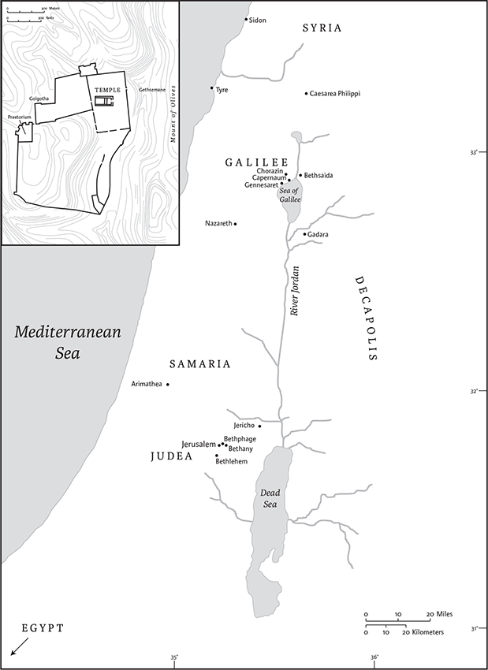

Matthew
Canonical Status
The authoritative status of the Gospel of Matthew was recognized as early as the beginning of the second century ce, and Matthew has always figured as the first book of the New Testament canon. This position is explicable for several reasons. First, as the Gospel that draws most extensively on the Jewish scriptures, Matthew links the Old and New Testaments by showing how prophecies from the former—including “fulfillment citations”—were realized in the person of Jesus. Second, Matthew was the most important Gospel for the early church and, until at least the end of the second century, the most influential writing in the New Testament. Its arrangement of the teaching of Jesus into five discourses, especially the Sermon on the Mount (chs 5–7), made it especially useful for the catechetical instruction of converts. In addition, its inclusion of narratives about Jesus's birth and resurrection offered a more comprehensive biographical shape to Jesus's life than the Gospel of Mark (which was likely Matthew's main source). Finally, unlike the other two Synoptic Gospels, the Gospel of Matthew was traditionally attributed to Matthew, one of Jesus's actual twelve disciples (cf. 10.3). Mark was regarded as a follower of the apostle Peter, and Luke of the apostle Paul.
Authorship, Date, and Place of Composition
Judgments about the authorship of this Gospel hinge significantly on which view of the synoptic problem is accepted. The following discussion accepts the two-document hypothesis as the most satisfactory solution to understanding how the Gospels of Matthew, Mark, and Luke relate to each other. On this reading, the Gospel of Mark was the author's chief source, together with a hypothetical sayings-source that he shared with Luke (designated “Q”), and some 210 verses unique to Matthew (“M”).
From the early second century the Gospel's author was identified as Matthew, one of the twelve disciples. This attribution to Matthew appears to be signaled by 9.9, where Mark's reference to Levi, the tax collector (Mk 2.13–17), is changed to Matthew, the tax collector. This change could be a subtle allusion to the Gospel's author, and for centuries it was regarded as such. If, however, the Evangelist's main sources were the Gospel of Mark and Q, it is difficult to explain why one of the twelve disciples should be so heavily reliant on a Gospel that was thought to have been written by someone who was not one of Jesus's disciples. Wouldn't Matthew have had a rich store of experiences to draw upon? It is, of course, possible that some of the Gospel's unique materials (M) do originate with Matthew, the disciple, but most scholars hold that the author/editor is someone other than the disciple Matthew (even if, as here, he is referred to as Matthew out of convenience).
The date of its composition is largely based on inferences from Matthew's Gospel itself. Many scholars see in Matthew 22.7 an allusion to the destruction of Jerusalem and the Temple by the Romans in 70 ce, which would necessitate a post-70 dating. Others, however, interpret 22.7 as a prediction by Jesus of the Temple's demise that employs stock prophetic images of judgment. On this reading, Matthew could be earlier, with its date presupposing only the existence of Q and the Gospel of Mark. Depending on when these two documents are dated, Matthew could conceivably be as early as the 50s or 60s ce. At the other end of the time frame, citations of Matthew's Gospel in the letters of Ignatius of Antioch, who died in the early second century, indicate that the Gospel must have been written before the end of the first century.
The Gospel's place of composition is also based on inferences from the text. Matthew 4:25 mentions that Jesus's reputation “extended to Syria”—a passage that the evangelist has added to Mark's account. Its deliberate inclusion could be taken as a clue to its origin. Since Syrian Antioch—the third-largest city in the Roman Empire—boasted sizable Christian and Jewish communities, it is generally regarded as the likeliest candidate for the provenance of the Gospel. Nevertheless, the inference is far from certain, and various other locales such as Galilee, the Decapolis, and Sepphoris, a Greco-Roman city located near Nazareth, are also distinct possibilities.
Literary Form and Structure
As noted earlier, Matthew's Gospel has a strong biographical character and shows affinities with the ancient Greek literary form of the bios (“life”). The bios differs from modern biographies in its focus on episodes that reveal the underlying character of its subject. Thus, rather than illustrating the psychological development of Jesus, Matthew's bios consistently shows Jesus's words and deeds to be characteristic of the humble and compassionate Messiah. The Gospel displays other literary contours, the most distinctive of which are five discourses by Jesus. Matthew contains more of Jesus's teaching than any other Gospel (approximately 43 percent compared to Mark: 20 percent; Luke: 37 percent; and John: 34 percent), much of it presented in these discourses. Each one ends with the distinctive phrase, “when Jesus had finished saying these things …” or a variant of it. Taken together, these discourses present five different aspects of Jesus's teaching. The number probably echoes the five books of the Torah/Pentateuch. The first discourse, the Sermon on the Mount (chs 5–7), is justly famous as an encapsulation of the “entry requirements of the kingdom,” while the other discourses provide an overview of the kingdom's progress: they address preaching about the kingdom (ch 10), its mysteries (ch 13), its application to the church (ch 18), and finally, its implications for the last days and final judgment (chs 24–25). These discourses are linked with narrative episodes, so that the overall Gospel consists of alternating accounts of Jesus's public ministry and his discourses, all framed by an “infancy” and a resurrection narrative.
As mentioned earlier, “fulfillment citations” are also a notable literary feature of the Gospel. Matthew is the evangelist who references the Jewish scriptures most frequently, alluding to some passages and specifically quoting others. Among the latter are approximately ten fulfillment citations (1.23; 2.15; 2.18; 2.23; 4.15–16; 8.17; 12.18–21; 13.35; 21.5; 27.9–10; cf. 2.5; 13.14; 24.15) that follow a formula that typically reads: “This was to fulfill what had been spoken through the prophet.” These citations are particularly prominent at the beginning of Jesus's ministry and focus on how Jesus's person and his actions were anticipated in Israel's scriptures.
Interpretation
Matthew can be regarded as the first interpreter of Mark's Gospel, which he adapted to address issues confronting his own church(es). He is the only evangelist to use the word “church” (Gk ekklesia, 16.18; 18.17) and to address questions of church authority and discipline (ch 18). The evangelist has overlaid the situation of Christians in his day onto the story of Jesus so that Jesus's words and actions can be seen to apply both to the time of Jesus and to believers a half century later. This dual focus helps to explain one of the Gospel's major anomalies, namely, its conflicted portrayal of Jewish piety and its religious leaders. Matthew's high regard for the Jewish Torah (5.17–20; 23.1–3), its extensive use of prophecies from the Jewish scriptures, and occasional disdain for non-Jews (5.47; 6.7,32; 16.17) all suggest a positive assessment of Judaism. On the other hand, the Gospel displays a strident and unrelenting condemnation of the Jewish leadership—the chief priests, elders, Sadducees, Pharisees, and scribes.
In Matthew, these groups are indiscriminately paired with each other in a manner inconsistent with the historical distinctions that existed between these groups in Jesus's day. The chief priests would have included the current high priest and a larger priestly college based in Jerusalem that was comprised largely of elders, including many Sadducees and some Pharisees. These two groups were highly influential in the Second Temple period, though little is known with certainty about either. The Pharisees of Jesus's day appear to have been a Jewish reform movement, advocating stringent observance of the Law and their own “oral Torah.” The Sadducees were likely aristocratic descendants of Zadok the priest (2 Sam 8.17) who considered the written, but not the “oral Torah” binding on Israel. In contrast to the Pharisees (Acts 23.6–10), they did not believe in angels, the spirit, or resurrection (Acts 23:8; cf. Mt 22.22–23). The scribes were not a distinct religious group, but a loose assemblage of lawyers, teachers, and interpreters of the Torah (Sir 39.1–11). The Gospel routinely condemns the Pharisees as hypocrites (e.g., 23.5–7), and the vehemence of this condemnation has led many scholars to suggest that their portrayal reflects later tensions between Matthew's church and emergent Rabbinic Judaism. In other words, the conflict between Jesus and the Pharisees reflects tensions that emerged some fifty years after Jesus's death.
The crucifixion narrative displays this same telescoping of perspectives. Responsibility for Jesus's passion is shifted from Pontius Pilate and the Romans to the Jewish people and their leadership (27.20–25). The horrific pronouncement “His blood be on us and on our children!” (27.25) is Matthew's way of attributing the destruction of Jerusalem and the Temple in 70 ce to Israel's rejection of Jesus. The vehemence with which the evangelist expresses such sentiments was likely intended to shock both Jewish Christians and their Jewish neighbors into reconsidering the claims made by the Gospel, and to discount rival claims being advanced by the leadership of emergent Rabbinic Judaism, such as the Jewish explanation for the resurrection of Jesus (Mt 27.52–66; 28.11–15).
While such strident rhetoric was characteristic of debates between groups in the first century ce, its longterm consequences have been disastrous. Subsequent non-Jewish Christians interpreted the Gospel as a warrant to exact retribution from Jews for the death of Jesus and the persecution of his first followers. A proper reading of the Gospel, therefore, requires being attuned to the polemical context in which it was written, and recognizing that the conflict between emerging Rabbinic Judaism and the smaller Jewish Christian minority ceased being relevant nearly two thousand years ago.
The type of methodology employed in this commentary is known as the historical-critical method. The details furnished in the notes are primarily intended to elucidate the context and historical and geographical background of the text. Readers should be aware that there are also other methodological approaches used by biblical scholars to interpret the Gospel, such as narrative criticism and social-scientific criticism. The former uses literary-critical approaches to analyze Matthew as a unified story, while the latter draws on the disciplines of anthropology and sociology to reconstruct the social world Jesus would have inhabited, and the societal values that would have been operative in his day.
J. R. C. Cousland
1
An account of the genealogya of Jesus the Messiah,b the son of David, the son of Abraham.
2Abraham was the father of Isaac, and Isaac the father of Jacob, and Jacob the father of Judah and his brothers, 3and Judah the father of Perez and Zerah by Tamar, and Perez the father of Hezron, and Hezron the father of Aram, 4and Aram the father of Aminadab, and Aminadab the father of Nahshon, and Nahshon the father of Salmon, 5and Salmon the father of Boaz by Rahab, and Boaz the father of Obed by Ruth, and Obed the father of Jesse, 6and Jesse the father of King David.
And David was the father of Solomon by the wife of Uriah, 7and Solomon the father of Rehoboam, and Rehoboam the father of Abijah, and Abijah the father of Asaph,c 8and Asaphc the father of Jehoshaphat, and Jehoshaphat the father of Joram, and Joram the father of Uzziah, 9and Uzziah the father of Jotham, and Jotham the father of Ahaz, and Ahaz the father of Hezekiah, 10and Hezekiah the father of Manasseh, and Manasseh the father of Amos,d and Amosd the father of Josiah, 11and Josiah the father of Jechoniah and his brothers, at the time of the deportation to Babylon.
12And after the deportation to Babylon: Jechoniah was the father of Salathiel, and Salathiel the father of Zerubbabel, 13and Zerubbabel the father of Abiud, and Abiud the father of Eliakim, and Eliakim the father of Azor, 14and Azor the father of Zadok, and Zadok the father of Achim, and Achim the father of Eliud, 15and Eliud the father of Eleazar, and Eleazar the father of Matthan, and Matthan the father of Jacob, 16and Jacob the father of Joseph the husband of Mary, of whom Jesus was born, who is called the Messiah.a
17So all the generations from Abraham to David are fourteen generations; and from David to the deportation to Babylon, fourteen generations; and from the deportation to Babylon to the Messiah,a fourteen generations.
18Now the birth of Jesus the Messiahb took place in this way. When his mother Mary had been engaged to Joseph, but before they lived together, she was found to be with child from the Holy Spirit. 19Her husband Joseph, being a righteous man and unwilling to expose her to public disgrace, planned to dismiss her quietly. 20But just when he had resolved to do this, an angel of the Lord appeared to him in a dream and said, “Joseph, son of David, do not be afraid to take Mary as your wife, for the child conceived in her is from the Holy Spirit. 21She will bear a son, and you are to name him Jesus, for he will save his people from their sins.” 22All this took place to fulfill what had been spoken by the Lord through the prophet:
23“Look, the virgin shall conceive and bear a son,
and they shall name him Emmanuel,”
which means, “God is with us.” 24When Joseph awoke from sleep, he did as the angel of the Lord commanded him; he took her as his wife, 25but had no marital relations with her until she had borne a son;c and he named him Jesus.
2
In the time of King Herod, after Jesus was born in Bethlehem of Judea, wise mend from the East came to Jerusalem, 2asking, “Where is the child who has been born king of the Jews? For we observed his star at its rising,e and have come to pay him homage.” 3When King Herod heard this, he was frightened, and all Jerusalem with him; 4and calling together all the chief priests and scribes of the people, he inquired of them where the Messiaha was to be born. 5They told him, “In Bethlehem of Judea; for so it has been written by the prophet:
7Then Herod secretly called for the wise menb and learned from them the exact time when the star had appeared. 8Then he sent them to Bethlehem, saying, “Go and search diligently for the child; and when you have found him, bring me word so that I may also go and pay him homage.” 9When they had heard the king, they set out; and there, ahead of them, went the star that they had seen at its rising,c until it stopped over the place where the child was. 10When they saw that the star had stopped,d they were overwhelmed with joy. 11On entering the house, they saw the child with Mary his mother; and they knelt down and paid him homage. Then, opening their treasure chests, they offered him gifts of gold, frankincense, and myrrh. 12And having been warned in a dream not to return to Herod, they left for their own country by another road.
13Now after they had left, an angel of the Lord appeared to Joseph in a dream and said, “Get up, take the child and his mother, and flee to Egypt, and remain there until I tell you; for Herod is about to search for the child, to destroy him.” 14Then Josephe got up, took the child and his mother by night, and went to Egypt, 15and remained there until the death of Herod. This was to fulfill what had been spoken by the Lord through the prophet, “Out of Egypt I have called my son.”
16When Herod saw that he had been tricked by the wise men,b he was infuriated, and he sent and killed all the children in and around Bethlehem who were two years old or under, according to the time that he had learned from the wise men.b17Then was fulfilled what had been spoken through the prophet Jeremiah:
18“A voice was heard in Ramah,
wailing and loud lamentation,
Rachel weeping for her children;
she refused to be consoled, because they are no more.”
19When Herod died, an angel of the Lord suddenly appeared in a dream to Joseph in Egypt and said, 20“Get up, take the child and his mother, and go to the land of Israel, for those who were seeking the child's life are dead.” 21Then Josephe got up, took the child and his mother, and went to the land of Israel. 22But when he heard that Archelaus was ruling over Judea in place of his father Herod, he was afraid to go there. And after being warned in a dream, he went away to the district of Galilee. 23There he made his home in a town called Nazareth, so that what had been spoken through the prophets might be fulfilled, “He will be called a Nazorean.”
3
In those days John the Baptist appeared in the wilderness of Judea, proclaiming, 2“Repent, for the kingdom of heaven has come near.”a 3This is the one of whom the prophet Isaiah spoke when he said,
“The voice of one crying out in the wilderness:
‘Prepare the way of the Lord,
make his paths straight.’”
4Now John wore clothing of camel's hair with a leather belt around his waist, and his food was locusts and wild honey. 5Then the people of Jerusalem and all Judea were going out to him, and all the region along the Jordan, 6and they were baptized by him in the river Jordan, confessing their sins.
7But when he saw many Pharisees and Sadducees coming for baptism, he said to them, “You brood of vipers! Who warned you to flee from the wrath to come? 8Bear fruit worthy of repentance. 9Do not presume to say to yourselves, ‘We have Abraham as our ancestor’; for I tell you, God is able from these stones to raise up children to Abraham. 10Even now the ax is lying at the root of the trees; every tree therefore that does not bear good fruit is cut down and thrown into the fire.
11“I baptize you withb water for repentance, but one who is more powerful than I is coming after me; I am not worthy to carry his sandals. He will baptize you withb the Holy Spirit and fire. 12His winnowing fork is in his hand, and he will clear his threshing floor and will gather his wheat into the granary; but the chaff he will burn with unquenchable fire.”
13Then Jesus came from Galilee to John at the Jordan, to be baptized by him. 14John would have prevented him, saying, “I need to be baptized by you, and do you come to me?” 15But Jesus answered him, “Let it be so now; for it is proper for us in this way to fulfill all righteousness.” Then he consented. 16And when Jesus had been baptized, just as he came up from the water, suddenly the heavens were opened to him and he saw the Spirit of God descending like a dove and alighting on him. 17And a voice from heaven said, “This is my Son, the Beloved,c with whom I am well pleased.”
4
Then Jesus was led up by the Spirit into the wilderness to be tempted by the devil. 2He fasted forty days and forty nights, and afterwards he was famished. 3The tempter came and said to him, “If you are the Son of God, command these stones to become loaves of bread.” 4But he answered, “It is written,
‘One does not live by bread alone,
but by every word that comes from the mouth of God.’”
5Then the devil took him to the holy
city and placed him on the pinnacle of the temple, 6saying to him, “If you are the Son of God, throw yourself down; for it is written,
‘He will command his angels concerning you,’
and ‘On their hands they will bear you up,
so that you will not dash your foot against a stone.’”
7Jesus said to him, “Again it is written, ‘Do not put the Lord your God to the test.’”
8Again, the devil took him to a very high mountain and showed him all the kingdoms of the world and their splendor; 9and he said to him, “All these I will give you, if you will fall down and worship me.” 10Jesus said to him, “Away with you, Satan! for it is written,
‘Worship the Lord your God,
and serve only him.’”
11Then the devil left him, and suddenly angels came and waited on him.
12Now when Jesusa heard that John had been arrested, he withdrew to Galilee. 13He left Nazareth and made his home in Capernaum by the sea, in the territory of Zebulun and Naphtali, 14so that what had been spoken through the prophet Isaiah might be fulfilled:
17From that time Jesus began to proclaim, “Repent, for the kingdom of heaven has come near.”b
18As he walked by the Sea of Galilee, he saw two brothers, Simon, who is called Peter, and Andrew his brother, casting a net into the sea—for they were fishermen. 19And he said to them, “Follow me, and I will make you fish for people.” 20Immediately they left their nets and followed him. 21As he went from there, he saw two other brothers, James son of Zebedee and his brother John, in the boat with their father Zebedee, mending their nets, and he called them. 22Immediately they left the boat and their father, and followed him.
23Jesusc went throughout Galilee, teaching in their synagogues and proclaiming the good newsd of the kingdom and curing every disease and every sickness among the people. 24So his fame spread throughout all Syria, and they brought to him all the sick, those who were afflicted with various diseases and pains, demoniacs, epileptics, and paralytics, and he cured them. 25And great crowds followed him from Galilee, the Decapolis, Jerusalem, Judea, and from beyond the Jordan.
5
When Jesusa saw the crowds, he went up the mountain; and after he sat down, his disciples came to him. 2Then he began to speak, and taught them, saying:
3“Blessed are the poor in spirit, for theirs is the kingdom of heaven.
4“Blessed are those who mourn, for they will be comforted.
5“Blessed are the meek, for they will inherit the earth.
6“Blessed are those who hunger and thirst for righteousness, for they will be filled.
7“Blessed are the merciful, for they will receive mercy.
8“Blessed are the pure in heart, for they will see God.
9“Blessed are the peacemakers, for they will be called children of God.
10“Blessed are those who are persecuted for righteousness’ sake, for theirs is the kingdom of heaven.
11“Blessed are you when people revile you and persecute you and utter all kinds of evil against you falselyb on my account. 12Rejoice and be glad, for your reward is great in heaven, for in the same way they persecuted the prophets who were before you.
13“You are the salt of the earth; but if salt has lost its taste, how can its saltiness be restored? It is no longer good for anything, but is thrown out and trampled under foot.
14“You are the light of the world. A city built on a hill cannot be hid. 15No one after lighting a lamp puts it under the bushel basket, but on the lampstand, and it gives light to all in the house. 16In the same way, let your light shine before others, so that they may see your good works and give glory to your Father in heaven.
17“Do not think that I have come to abolish the law or the prophets; I have come not to abolish but to fulfill. 18For truly I tell you, until heaven and earth pass away, not one letter,a not one stroke of a letter, will pass from the law until all is accomplished. 19Therefore, whoever breaksb one of the least of these commandments, and teaches others to do the same, will be called least in the kingdom of heaven; but whoever does them and teaches them will be called great in the kingdom of heaven. 20For I tell you, unless your righteousness exceeds that of the scribes and Pharisees, you will never enter the kingdom of heaven.
21“You have heard that it was said to those of ancient times, ‘You shall not murder’; and ‘whoever murders shall be liable to judgment.’ 22But I say to you that if you are angry with a brother or sister,c you will be liable to judgment; and if you insultd a brother or sister,e you will be liable to the council; and if you say, ‘You fool,’ you will be liable to the hellf of fire. 23So when you are offering your gift at the altar, if you remember that your brother or sisterg has something against you, 24leave your gift there before the altar and go; first be reconciled to your brother or sister,g and then come and offer your gift. 25Come to terms quickly with your accuser while you are on the way to courth with him, or your accuser may hand you over to the judge, and the judge to the guard, and you will be thrown into prison. 26Truly I tell you, you will never get out until you have paid the last penny.
27“You have heard that it was said, ‘You shall not commit adultery.’ 28But I say to you that everyone who looks at a woman with lust has already committed adultery with her in his heart. 29If your right eye causes you to sin, tear it out and throw it away; it is better for you to lose one of your members than for your whole body to be thrown into hell.f30And if your right hand causes you to sin, cut it off and throw it away; it is better for you to lose one of your members than for your whole body to go into hell.f
31“It was also said, ‘Whoever divorces his wife, let him give her a certificate of divorce.’ 32But I say to you that anyone who divorces his wife, except on the ground of unchastity, causes her to commit adultery; and whoever marries a divorced woman commits adultery.
33“Again, you have heard that it was said to those of ancient times, ‘You shall not swear falsely, but carry out the vows you have made to the Lord.’ 34But I say to you, Do not swear at all, either by heaven, for it is the throne of God, 35or by the earth, for it is his footstool, or by Jerusalem, for it is the city of the great King. 36And do not swear by your head, for you cannot make one hair white or black. 37Let your word be ‘Yes, Yes’ or ‘No, No’; anything more than this comes from the evil one.a
38“You have heard that it was said, ‘An eye for an eye and a tooth for a tooth.’ 39But I say to you, Do not resist an evildoer. But if anyone strikes you on the right cheek, turn the other also; 40and if anyone wants to sue you and take your coat, give your cloak as well; 41and if anyone forces you to go one mile, go also the second mile. 42Give to everyone who begs from you, and do not refuse anyone who wants to borrow from you.
43“You have heard that it was said, ‘You shall love your neighbor and hate your enemy.’ 44But I say to you, Love your enemies and pray for those who persecute you, 45so that you may be children of your Father in heaven; for he makes his sun rise on the evil and on the good, and sends rain on the righteous and on the unrighteous. 46For if you love those who love you, what reward do you have? Do not even the tax collectors do the same? 47And if you greet only your brothers and sisters,b what more are you doing than others? Do not even the Gentiles do the same? 48Be perfect, therefore, as your heavenly Father is perfect.
6
“Beware of practicing your piety before others in order to be seen by them; for then you have no reward from your Father in heaven.
2“So whenever you give alms, do not sound a trumpet before you, as the hypocrites do in the synagogues and in the streets, so that they may be praised by others. Truly I tell you, they have received their reward. 3But when you give alms, do not let your left hand know what your right hand is doing, 4so that your alms may be done in secret; and your Father who sees in secret will reward you.c
5“And whenever you pray, do not be like the hypocrites; for they love to stand and pray in the synagogues and at the street corners, so that they may be seen by others. Truly I tell you, they have received their reward. 6But whenever you pray, go into your room and shut the door and pray to your Father who is in secret; and your Father who sees in secret will reward you.c
7“When you are praying, do not heap up empty phrases as the Gentiles do; for they think that they will be heard because of their many words. 8Do not be like them, for your Father knows what you need before you ask him.
9“Pray then in this way:
Our Father in heaven,
hallowed be your name.
10Your kingdom come.
Your will be done,
on earth as it is in heaven.
11Give us this day our daily bread.a
12And forgive us our debts,
as we also have forgiven our debtors.
13And do not bring us to the time of trial,b
but rescue us from the evil one.c
14For if you forgive others their trespasses, your heavenly Father will also forgive you; 15but if you do not forgive others, neither will your Father forgive your trespasses.
16“And whenever you fast, do not look dismal, like the hypocrites, for they disfigure their faces so as to show others that they are fasting. Truly I tell you, they have received their reward. 17But when you fast, put oil on your head and wash your face, 18so that your fasting may be seen not by others but by your Father who is in secret; and your Father who sees in secret will reward you.d
19“Do not store up for yourselves treasures on earth, where moth and ruste consume and where thieves break in and steal; 20but store up for yourselves treasures in heaven, where neither moth nor ruste consumes and where thieves do not break in and steal. 21For where your treasure is, there your heart will be also.
22“The eye is the lamp of the body. So, if your eye is healthy, your whole body will be full of light; 23but if your eye is unhealthy, your whole body will be full of darkness. If then the light in you is darkness, how great is the darkness!
24“No one can serve two masters; for a slave will either hate the one and love the other, or be devoted to the one and despise the other. You cannot serve God and wealth.f
25“Therefore I tell you, do not worry about your life, what you will eat or what you will drink,g or about your body, what you will wear. Is not life more than food, and the body more than clothing? 26Look at the birds of the air; they neither sow nor reap nor gather into barns, and yet your heavenly Father feeds them. Are you not of more value than they? 27And can any of you by worrying add a single hour to your span of life?h 28And why do you worry about clothing? Consider the lilies of the field, how they grow; they neither toil nor spin, 29yet I tell you, even Solomon in all his glory was not clothed like one of these. 30But if God so clothes the grass of the field, which is alive today and tomorrow is thrown into the oven, will he not much more clothe you—you of little faith? 31Therefore do not worry, saying, ‘What will we eat?’ or ‘What will we drink?’ or ‘What will we wear?’ 32For it is the Gentiles who strive for all these things; and indeed your heavenly Father knows that you need all these things. 33But strive first for the kingdom of Godi and hisj righteousness, and all these things will be given to you as well.
34“So do not worry about tomorrow, for tomorrow will bring worries of its own. Today's trouble is enough for today.
7
“Do not judge, so that you may not be judged. 2For with the judgment you make you will be judged, and the measure you give will be the measure you get. 3Why do you see the speck in your neighbor'sa eye, but do not notice the log in your own eye? 4Or how can you say to your neighbor,b ‘Let me take the speck out of your eye,’ while the log is in your own eye? 5You hypocrite, first take the log out of your own eye, and then you will see clearly to take the speck out of your neighbor'sa eye.
6“Do not give what is holy to dogs; and do not throw your pearls before swine, or they will trample them under foot and turn and maul you.
7“Ask, and it will be given you; search, and you will find; knock, and the door will be opened for you. 8For everyone who asks receives, and everyone who searches finds, and for everyone who knocks, the door will be opened. 9Is there anyone among you who, if your child asks for bread, will give a stone? 10Or if the child asks for a fish, will give a snake? 11If you then, who are evil, know how to give good gifts to your children, how much more will your Father in heaven give good things to those who ask him!
12“In everything do to others as you would have them do to you; for this is the law and the prophets.
13“Enter through the narrow gate; for the gate is wide and the road is easyc that leads to destruction, and there are many who take it. 14For the gate is narrow and the road is hard that leads to life, and there are few who find it.
15“Beware of false prophets, who come to you in sheep's clothing but inwardly are ravenous wolves. 16You will know them by their fruits. Are grapes gathered from thorns, or figs from thistles? 17In the same way, every good tree bears good fruit, but the bad tree bears bad fruit. 18A good tree cannot bear bad fruit, nor can a bad tree bear good fruit. 19Every tree that does not bear good fruit is cut down and thrown into the fire. 20Thus you will know them by their fruits.
21“Not everyone who says to me, ‘Lord, Lord,’ will enter the kingdom of heaven, but only the one who does the will of my Father in heaven. 22On that day many will say to me, ‘Lord, Lord, did we not prophesy in your name, and cast out demons in your name, and do many deeds of power in your name?’ 23Then I will declare to them, ‘I never knew you; go away from me, you evildoers.’
24“Everyone then who hears these words of mine and acts on them will be like a wise man who built his house on rock. 25The rain fell, the floods came, and the winds blew and beat on that house, but it did not fall, because it had been founded on rock. 26And everyone who hears these words of mine and does not act on them will be like a foolish man who built his house on sand. 27The rain fell, and the floods came, and the winds blew and beat against that house, and it fell—and great was its fall!”
28Now when Jesus had finished saying these things, the crowds were astounded at his teaching, 29for he taught them as one having authority, and not as their scribes.
8
When Jesusa had come down from the mountain, great crowds followed him; 2and there was a leperb who came to him and knelt before him, saying, “Lord, if you choose, you can make me clean.” 3He stretched out his hand and touched him, saying, “I do choose. Be made clean!” Immediately his leprosyb was cleansed. 4Then Jesus said to him, “See that you say nothing to anyone; but go, show yourself to the priest, and offer the gift that Moses commanded, as a testimony to them.”
5When he entered Capernaum, a centurion came to him, appealing to him 6and saying, “Lord, my servant is lying at home paralyzed, in terrible distress.” 7And he said to him, “I will come and cure him.” 8The centurion answered, “Lord, I am not worthy to have you come under my roof; but only speak the word, and my servant will be healed. 9For I also am a man under authority, with soldiers under me; and I say to one, ‘Go,’ and he goes, and to another, ‘Come,’ and he comes, and to my slave, ‘Do this,’ and the slave does it.” 10When Jesus heard him, he was amazed and said to those who followed him, “Truly I tell you, in no onec in Israel have I found such faith. 11I tell you, many will come from east and west and will eat with Abraham and Isaac and Jacob in the kingdom of heaven, 12while the heirs of the kingdom will be thrown into the outer darkness, where there will be weeping and gnashing of teeth.” 13And to the centurion Jesus said, “Go; let it be done for you according to your faith.” And the servant was healed in that hour.
14When Jesus entered Peter's house, he saw his mother-in-law lying in bed with a fever; 15he touched her hand, and the fever left her, and she got up and began to serve him. 16That evening they brought to him many who were possessed with demons; and he cast out the spirits with a word, and cured all who were sick. 17This was to fulfill what had been spoken through the prophet Isaiah, “He took our infirmities and bore our diseases.”
18Now when Jesus saw great crowds around him, he gave orders to go over to the other side. 19A scribe then approached and said, “Teacher, I will follow you wherever you go.” 20And Jesus said to him, “Foxes have holes, and birds of the air have nests; but the Son of Man has nowhere to lay his head.” 21Another of his disciples said to him, “Lord, first let me go and bury my father.” 22But Jesus said to him, “Follow me, and let the dead bury their own dead.”
23And when he got into the boat, his disciples followed him. 24A windstorm arose on the sea, so great that the boat was being swamped by the waves; but he was asleep. 25And they went and woke him up, saying, “Lord, save us! We are perishing!” 26And he said to them, “Why are you afraid, you of little faith?” Then he got up and rebuked the winds and the sea; and there was a dead calm. 27They were amazed, saying, “What sort of man is this, that even the winds and the sea obey him?”
28When he came to the other side, to the country of the Gadarenes,a two demoniacs coming out of the tombs met him. They were so fierce that no one could pass that way. 29Suddenly they shouted, “What have you to do with us, Son of God? Have you come here to torment us before the time?” 30Now a large herd of swine was feeding at some distance from them. 31The demons begged him, “If you cast us out, send us into the herd of swine.” 32And he said to them, “Go!” So they came out and entered the swine; and suddenly, the whole herd rushed down the steep bank into the sea and perished in the water. 33The swineherds ran off, and on going into the town, they told the whole story about what had happened to the demoniacs. 34Then the whole town came out to meet Jesus; and when they saw him, they begged him to leave their neighborhood.
9
1And after getting into a boat he crossed the sea and came to his own town.
2And just then some people were carrying a paralyzed man lying on a bed. When Jesus saw their faith, he said to the paralytic, “Take heart, son; your sins are forgiven.” 3Then some of the scribes said to themselves, “This man is blaspheming.” 4But Jesus, perceiving their thoughts, said, “Why do you think evil in your hearts? 5For which is easier, to say, ‘Your sins are forgiven,’ or to say, ‘Stand up and walk’? 6But so that you may know that the Son of Man has authority on earth to forgive sins”—he then said to the paralytic—“Stand up, take your bed and go to your home.” 7And he stood up and went to his home. 8When the crowds saw it, they were filled with awe, and they glorified God, who had given such authority to human beings.
9As Jesus was walking along, he saw a man called Matthew sitting at the tax booth; and he said to him, “Follow me.” And he got up and followed him.
10And as he sat at dinnera in the house, many tax collectors and sinners came and were sittingb with him and his disciples. 11When the Pharisees saw this, they said to his disciples, “Why does your teacher eat with tax collectors and sinners?” 12But when he heard this, he said, “Those who are well have no need of a physician, but those who are sick. 13Go and learn what this means, ‘I desire mercy, not sacrifice.’ For I have come to call not the righteous but sinners.”
14Then the disciples of John came to him, saying, “Why do we and the Pharisees fast often,c but your disciples do not fast?” 15And Jesus said to them, “The wedding guests cannot mourn as long as the bridegroom is with them, can they? The days will come when the bridegroom is taken away from them, and then they will fast. 16No one sews a piece of unshrunk cloth on an old cloak, for the patch pulls away from the cloak, and a worse tear is made. 17Neither is new wine put into old wineskins; otherwise, the skins burst, and the wine is spilled, and the skins are destroyed; but new wine is put into fresh wineskins, and so both are preserved.”
18While he was saying these things to them, suddenly a leader of the synagogued came in and knelt before him, saying, “My daughter has just died; but come and lay your hand on her, and she will live.” 19And Jesus got up and followed him, with his disciples. 20Then suddenly a woman who had been suffering from hemorrhages for twelve years came up behind him and touched the fringe of his cloak, 21for she said to herself, “If I only touch his cloak, I will be made well.” 22Jesus turned, and seeing her he said, “Take heart, daughter; your faith has made you well.” And instantly the woman was made well. 23When Jesus came to the leader's house and saw the flute players and the crowd making a commotion, 24he said, “Go away; for the girl is not dead but sleeping.” And they laughed at him. 25But when the crowd had been put outside, he went in and took her by the hand, and the girl got up. 26And the report of this spread throughout that district.
27As Jesus went on from there, two blind men followed him, crying loudly, “Have mercy on us, Son of David!” 28When he entered the house, the blind men came to him; and Jesus said to them, “Do you believe that I am able to do this?” They said to him, “Yes, Lord.” 29Then he touched their eyes and said, “According to your faith let it be done to you.” 30And their eyes were opened. Then Jesus sternly ordered them, “See that no one knows of this.” 31But they went away and spread the news about him throughout that district.
32After they had gone away, a demoniac who was mute was brought to him. 33And when the demon had been cast out, the one who had been mute spoke; and the crowds were amazed and said, “Never has anything like this been seen in Israel.” 34But the Pharisees said, “By the ruler of the demons he casts out the demons.”e
35Then Jesus went about all the cities and villages, teaching in their synagogues, and proclaiming the good news of the kingdom, and curing every disease and every sickness. 36When he saw the crowds, he had compassion for them, because they were harassed and helpless, like sheep without a shepherd. 37Then he said to his disciples, “The harvest is plentiful, but the laborers are few; 38therefore ask the Lord of the harvest to send out laborers into his harvest.”
10
Then Jesusa summoned his twelve disciples and gave them authority over unclean spirits, to cast them out, and to cure every disease and every sickness. 2These are the names of the twelve apostles: first, Simon, also known as Peter, and his brother Andrew; James son of Zebedee, and his brother John; 3Philip and Bartholomew; Thomas and Matthew the tax collector; James son of Alphaeus, and Thaddaeus;b 4Simon the Cananaean, and Judas Iscariot, the one who betrayed him.
5These twelve Jesus sent out with the following instructions: “Go nowhere among the Gentiles, and enter no town of the Samaritans, 6but go rather to the lost sheep of the house of Israel. 7As you go, proclaim the good news, ‘The kingdom of heaven has come near.’c 8Cure the sick, raise the dead, cleanse the lepers,d cast out demons. You received without payment; give without payment. 9Take no gold, or silver, or copper in your belts, 10no bag for your journey, or two tunics, or sandals, or a staff; for laborers deserve their food. 11Whatever town or village you enter, find out who in it is worthy, and stay there until you leave. 12As you enter the house, greet it. 13If the house is worthy, let your peace come upon it; but if it is not worthy, let your peace return to you. 14If anyone will not welcome you or listen to your words, shake off the dust from your feet as you leave that house or town. 15Truly I tell you, it will be more tolerable for the land of Sodom and Gomorrah on the day of judgment than for that town.
16“See, I am sending you out like sheep into the midst of wolves; so be wise as serpents and innocent as doves. 17Beware of them, for they will hand you over to councils and flog you in their synagogues; 18and you will be dragged before governors and kings because of me, as a testimony to them and the Gentiles. 19When they hand you over, do not worry about how you are to speak or what you are to say; for what you are to say will be given to you at that time; 20for it is not you who speak, but the Spirit of your Father speaking through you. 21Brother will betray brother to death, and a father his child, and children will rise against parents and have them put to death; 22and you will be hated by all because of my name. But the one who endures to the end will be saved. 23When they persecute you in one town, flee to the next; for truly I tell you, you will not have gone through all the towns of Israel before the Son of Man comes.
24“A disciple is not above the teacher, nor a slave above the master; 25it is enough for the disciple to be like the teacher, and the slave like the master. If they have called the master of the house Beelzebul, how much more will they malign those of his household!
26“So have no fear of them; for nothing is covered up that will not be uncovered, and nothing secret that will not become known. 27What I say to you in the dark, tell in the light; and what you hear whispered, proclaim from the housetops. 28Do not fear those who kill the body but cannot kill the soul; rather fear him who can destroy both soul and body in hell.a 29Are not two sparrows sold for a penny? Yet not one of them will fall to the ground apart from your Father. 30And even the hairs of your head are all counted. 31So do not be afraid; you are of more value than many sparrows.
32“Everyone therefore who acknowledges me before others, I also will acknowledge before my Father in heaven; 33but whoever denies me before others, I also will deny before my Father in heaven.
34“Do not think that I have come to bring peace to the earth; I have not come to bring peace, but a sword.
37Whoever loves father or mother more than me is not worthy of me; and whoever loves son or daughter more than me is not worthy of me; 38and whoever does not take up the cross and follow me is not worthy of me. 39Those who find their life will lose it, and those who lose their life for my sake will find it.
40“Whoever welcomes you welcomes me, and whoever welcomes me welcomes the one who sent me. 41Whoever welcomes a prophet in the name of a prophet will receive a prophet's reward; and whoever welcomes a righteous person in the name of a righteous person will receive the reward of the righteous; 42and whoever gives even a cup of cold water to one of these little ones in the name of a disciple—truly I tell you, none of these will lose their reward.”
11
Now when Jesus had finished instructing his twelve disciples, he went on from there to teach and proclaim his message in their cities.
2When John heard in prison what the Messiahb was doing, he sent word by hisc disciples 3and said to him, “Are you the one who is to come, or are we to wait for another?”
4Jesus answered them, “Go and tell John what you hear and see: 5the blind receive their sight, the lame walk, the lepersa are cleansed, the deaf hear, the dead are raised, and the poor have good news brought to them. 6And blessed is anyone who takes no offense at me.”
7As they went away, Jesus began to speak to the crowds about John: “What did you go out into the wilderness to look at? A reed shaken by the wind? 8What then did you go out to see? Someoneb dressed in soft robes? Look, those who wear soft robes are in royal palaces. 9What then did you go out to see? A prophet?c Yes, I tell you, and more than a prophet. 10This is the one about whom it is written,
‘See, I am sending my messenger ahead of you,
who will prepare your way before you.’
11Truly I tell you, among those born of women no one has arisen greater than John the Baptist; yet the least in the kingdom of heaven is greater than he. 12From the days of John the Baptist until now the kingdom of heaven has suffered violence,d and the violent take it by force. 13For all the prophets and the law prophesied until John came; 14and if you are willing to accept it, he is Elijah who is to come. 15Let anyone with earse listen!
16“But to what will I compare this generation? It is like children sitting in the marketplaces and calling to one another,
17‘We played the flute for you, and you did not dance;
we wailed, and you did not mourn.’
18For John came neither eating nor drinking, and they say, ‘He has a demon’; 19the Son of Man came eating and drinking, and they say, ‘Look, a glutton and a drunkard, a friend of tax collectors and sinners!’ Yet wisdom is vindicated by her deeds.”f
20Then he began to reproach the cities in which most of his deeds of power had been done, because they did not repent. 21“Woe to you, Chorazin! Woe to you, Bethsaida! For if the deeds of power done in you had been done in Tyre and Sidon, they would have repented long ago in sackcloth and ashes. 22But I tell you, on the day of judgment it will be more tolerable for Tyre and Sidon than for you. 23And you, Capernaum,
will you be exalted to heaven?
No, you will be brought down to Hades.
For if the deeds of power done in you had been done in Sodom, it would have remained until this day. 24But I tell you that on the day of judgment it will be more tolerable for the land of Sodom than for you.”
25At that time Jesus said, “I thanka you, Father, Lord of heaven and earth, because you have hidden these things from the wise and the intelligent and have revealed them to infants; 26yes, Father, for such was your gracious will.b 27All things have been handed over to me by my Father; and no one knows the Son except the Father, and no one knows the Father except the Son and anyone to whom the Son chooses to reveal him.
28“Come to me, all you that are weary and are carrying heavy burdens, and I will give you rest. 29Take my yoke upon you, and learn from me; for I am gentle and humble in heart, and you will find rest for your souls. 30For my yoke is easy, and my burden is light.”
12
At that time Jesus went through the grainfields on the sabbath; his disciples were hungry, and they began to pluck heads of grain and to eat. 2When the Pharisees saw it, they said to him, “Look, your disciples are doing what is not lawful to do on the sabbath.” 3He said to them, “Have you not read what David did when he and his companions were hungry? 4He entered the house of God and ate the bread of the Presence, which it was not lawful for him or his companions to eat, but only for the priests. 5Or have you not read in the law that on the sabbath the priests in the temple break the sabbath and yet are guiltless? 6I tell you, something greater than the temple is here. 7But if you had known what this means, ‘I desire mercy and not sacrifice,’ you would not have condemned the guiltless. 8For the Son of Man is lord of the sabbath.”
9He left that place and entered their synagogue; 10a man was there with a withered hand, and they asked him, “Is it lawful to cure on the sabbath?” so that they might accuse him. 11He said to them, “Suppose one of you has only one sheep and it falls into a pit on the sabbath; will you not lay hold of it and lift it out? 12How much more valuable is a human being than a sheep! So it is lawful to do good on the sabbath.” 13Then he said to the man, “Stretch out your hand.” He stretched it out, and it was restored, as sound as the other. 14But the Pharisees went out and conspired against him, how to destroy him.
15When Jesus became aware of this, he departed. Many crowdsc followed him, and he cured all of them, 16and he ordered them not to make him known. 17This was to fulfill what had been spoken through the prophet Isaiah:
18“Here is my servant, whom I have chosen,
my beloved, with whom my soul is well pleased.
I will put my Spirit upon him,
and he will proclaim justice to the Gentiles.
19He will not wrangle or cry aloud,
nor will anyone hear his voice in the streets.
20He will not break a bruised reed
or quench a smoldering wick
until he brings justice to victory.
21And in his name the Gentiles will hope.”
22Then they brought to him a demoniac who was blind and mute; and he cured him, so that the one who had been mute could speak and see. 23All the crowds were amazed and said, “Can this be the Son of David?” 24But when the Pharisees heard it, they said, “It is only by Beelzebul, the ruler of the demons, that this fellow casts out the demons.” 25He knew what they were thinking and said to them, “Every kingdom divided against itself is laid waste, and no city or house divided against itself will stand. 26If Satan casts out Satan, he is divided against himself; how then will his kingdom stand? 27If I cast out demons by Beelzebul, by whom do your own exorcistsa cast them out? Therefore they will be your judges. 28But if it is by the Spirit of God that I cast out demons, then the kingdom of God has come to you. 29Or how can one enter a strong man's house and plunder his property, without first tying up the strong man? Then indeed the house can be plundered. 30Whoever is not with me is against me, and whoever does not gather with me scatters. 31Therefore I tell you, people will be forgiven for every sin and blasphemy, but blasphemy against the Spirit will not be forgiven. 32Whoever speaks a word against the Son of Man will be forgiven, but whoever speaks against the Holy Spirit will not be forgiven, either in this age or in the age to come.
33“Either make the tree good, and its fruit good; or make the tree bad, and its fruit bad; for the tree is known by its fruit. 34You brood of vipers! How can you speak good things, when you are evil? For out of the abundance of the heart the mouth speaks. 35The good person brings good things out of a good treasure, and the evil person brings evil things out of an evil treasure. 36I tell you, on the day of judgment you will have to give an account for every careless word you utter; 37for by your words you will be justified, and by your words you will be condemned.”
38Then some of the scribes and Pharisees said to him, “Teacher, we wish to see a sign from you.” 39But he answered them, “An evil and adulterous generation asks for a sign, but no sign will be given to it except the sign of the prophet Jonah. 40For just as Jonah was three days and three nights in the belly of the sea monster, so for three days and three nights the Son of Man will be in the heart of the earth. 41The people of Nineveh will rise up at the judgment with this generation and condemn it, because they repented at the proclamation of Jonah, and see, something greater than Jonah is here! 42The queen of the South will rise up at the judgment with this generation and condemn it, because she came from the ends of the earth to listen to the wisdom of Solomon, and see, something greater than Solomon is here!
43“When the unclean spirit has gone out of a person, it wanders through waterless regions looking for a resting place, but it finds none. 44Then it says, ‘I will return to my house from which I came.’ When it comes, it finds it empty, swept, and put in order. 45Then it goes and brings along seven other spirits more evil than itself, and they enter and live there; and the last state of that person is worse than the first. So will it be also with this evil generation.”
46While he was still speaking to the crowds, his mother and his brothers were standing outside, wanting to speak to him. 47Someone told him, “Look, your mother and your brothers are standing outside, wanting to speak to you.”a 48But to the one who had told him this, Jesusb replied, “Who is my mother, and who are my brothers?” 49And pointing to his disciples, he said, “Here are my mother and my brothers! 50For whoever does the will of my Father in heaven is my brother and sister and mother.”
13
That same day Jesus went out of the house and sat beside the sea. 2Such great crowds gathered around him that he got into a boat and sat there, while the whole crowd stood on the beach. 3And he told them many things in parables, saying: “Listen! A sower went out to sow. 4And as he sowed, some seeds fell on the path, and the birds came and ate them up. 5Other seeds fell on rocky ground, where they did not have much soil, and they sprang up quickly, since they had no depth of soil. 6But when the sun rose, they were scorched; and since they had no root, they withered away. 7Other seeds fell among thorns, and the thorns grew up and choked them. 8Other seeds fell on good soil and brought forth grain, some a hundredfold, some sixty, some thirty. 9Let anyone with earsc listen!”
10Then the disciples came and asked him, “Why do you speak to them in parables?” 11He answered, “To you it has been given to know the secretsd of the kingdom of heaven, but to them it has not been given. 12For to those who have, more will be given, and they will have an abundance; but from those who have nothing, even what they have will be taken away. 13The reason I speak to them in parables is that ‘seeing they do not perceive, and hearing they do not listen, nor do they understand.’ 14With them indeed is fulfilled the prophecy of Isaiah that says:
‘You will indeed listen, but never understand,
and you will indeed look, but never perceive.
15For this people's heart has grown dull,
and their ears are hard of hearing,
and they have shut their eyes;
so that they might not look with their eyes,
and listen with their ears,
and understand with their heart and turn—
and I would heal them.’
16But blessed are your eyes, for they see, and your ears, for they hear. 17Truly I tell you, many prophets and righteous people longed to see what you see, but did not see it, and to hear what you hear, but did not hear it.
18“Hear then the parable of the sower. 19When anyone hears the word of the kingdom and does not understand it, the evil one comes and snatches away what is sown in the heart; this is what was sown on the path. 20As for what was sown on rocky ground, this is the one who hears the word and immediately receives it with joy; 21yet such a person has no root, but endures only for a while, and when trouble or persecution arises on account of the word, that person immediately falls away.a 22As for what was sown among thorns, this is the one who hears the word, but the cares of the world and the lure of wealth choke the word, and it yields nothing. 23But as for what was sown on good soil, this is the one who hears the word and understands it, who indeed bears fruit and yields, in one case a hundredfold, in another sixty, and in another thirty.”
24He put before them another parable: “The kingdom of heaven may be compared to someone who sowed good seed in his field; 25but while everybody was asleep, an enemy came and sowed weeds among the wheat, and then went away. 26So when the plants came up and bore grain, then the weeds appeared as well. 27And the slaves of the householder came and said to him, ‘Master, did you not sow good seed in your field? Where, then, did these weeds come from?’ 28He answered, ‘An enemy has done this.’ The slaves said to him, ‘Then do you want us to go and gather them?’ 29But he replied, ‘No; for in gathering the weeds you would uproot the wheat along with them. 30Let both of them grow together until the harvest; and at harvest time I will tell the reapers, Collect the weeds first and bind them in bundles to be burned, but gather the wheat into my barn.’”
31He put before them another parable: “The kingdom of heaven is like a mustard seed that someone took and sowed in his field; 32it is the smallest of all the seeds, but when it has grown it is the greatest of shrubs and becomes a tree, so that the birds of the air come and make nests in its branches.”
33He told them another parable: “The kingdom of heaven is like yeast that a woman took and mixed in withb three measures of flour until all of it was leavened.”
34Jesus told the crowds all these things in parables; without a parable he told them nothing. 35This was to fulfill what had been spoken through the prophet:c
“I will open my mouth to speak in parables;
I will proclaim what has been hidden from the foundation of the world.”d
36Then he left the crowds and went into the house. And his disciples approached him, saying, “Explain to us the parable of the weeds of the field.” 37He answered, “The one who sows the good seed is the Son of Man; 38the field is the world, and the good seed are the children of the kingdom; the weeds are the children of the evil one, 39and the enemy who sowed them is the devil; the harvest is the end of the age, and the reapers are angels. 40Just as the weeds are collected and burned up with fire, so will it be at the end of the age. 41The Son of Man will send his angels, and they will collect out of his kingdom all causes of sin and all evildoers, 42and they will throw them into the furnace of fire, where there will be weeping and gnashing of teeth. 43Then the righteous will shine like the sun in the kingdom of their Father. Let anyone with earse listen!
44“The kingdom of heaven is like treasure hidden in a field, which someone found and hid; then in his joy he goes and sells all that he has and buys that field.
45“Again, the kingdom of heaven is like a merchant in search of fine pearls; 46on finding one pearl of great value, he went and sold all that he had and bought it.
47“Again, the kingdom of heaven is like a net that was thrown into the sea and caught fish of every kind; 48when it was full, they drew it ashore, sat down, and put the good into baskets but threw out the bad. 49So it will be at the end of the age. The angels will come out and separate the evil from the righteous 50and throw them into the furnace of fire, where there will be weeping and gnashing of teeth.
51“Have you understood all this?” They answered, “Yes.” 52And he said to them, “Therefore every scribe who has been trained for the kingdom of heaven is like the master of a household who brings out of his treasure what is new and what is old.” 53When Jesus had finished these parables, he left that place.
54He came to his hometown and began to teach the peoplea in their synagogue, so that they were astounded and said, “Where did this man get this wisdom and these deeds of power? 55Is not this the carpenter's son? Is not his mother called Mary? And are not his brothers James and Joseph and Simon and Judas? 56And are not all his sisters with us? Where then did this man get all this?” 57And they took offense at him. But Jesus said to them, “Prophets are not without honor except in their own country and in their own house.” 58And he did not do many deeds of power there, because of their unbelief.
14
At that time Herod the rulerb heard reports about Jesus; 2and he said to his servants, “This is John the Baptist; he has been raised from the dead, and for this reason these powers are at work in him.” 3For Herod had arrested John, bound him, and put him in prison on account of Herodias, his brother Philip's wife,c 4because John had been telling him, “It is not lawful for you to have her.” 5Though Herodd wanted to put him to death, he feared the crowd, because they regarded him as a prophet. 6But when Herod's birthday came, the daughter of Herodias danced before the company, and she pleased Herod 7so much that he promised on oath to grant her whatever she might ask. 8Prompted by her mother, she said, “Give me the head of John the Baptist here on a platter.” 9The king was grieved, yet out of regard for his oaths and for the guests, he commanded it to be given; 10he sent and had John beheaded in the prison. 11The head was brought on a platter and given to the girl, who brought it to her mother. 12His disciples came and took the body and buried it; then they went and told Jesus.
13Now when Jesus heard this, he withdrew from there in a boat to a deserted place by himself. But when the crowds heard it, they followed him on foot from the towns. 14When he went ashore, he saw a great crowd; and he had compassion for them and cured their sick. 15When it was evening, the disciples came to him and said, “This is a deserted place, and the hour is now late; send the crowds away so that they may go into the villages and buy food for themselves.” 16Jesus said to them, “They need not go away; you give them something to eat.” 17They replied, “We have nothing here but five loaves and two fish.” 18And he said, “Bring them here to me.” 19Then he ordered the crowds to sit down on the grass. Taking the five loaves and the two fish, he looked up to heaven, and blessed and broke the loaves, and gave them to the disciples, and the disciples gave them to the crowds. 20And all ate and were filled; and they took up what was left over of the broken pieces, twelve baskets full. 21And those who ate were about five thousand men, besides women and children.
22Immediately he made the disciples get into the boat and go on ahead to the other side, while he dismissed the crowds. 23And after he had dismissed the crowds, he went up the mountain by himself to pray. When evening came, he was there alone, 24but by this time the boat, battered by the waves, was far from the land,a for the wind was against them. 25And early in the morning he came walking toward them on the sea. 26But when the disciples saw him walking on the sea, they were terrified, saying, “It is a ghost!” And they cried out in fear. 27But immediately Jesus spoke to them and said, “Take heart, it is I; do not be afraid.”
28Peter answered him, “Lord, if it is you, command me to come to you on the water.” 29He said, “Come.” So Peter got out of the boat, started walking on the water, and came toward Jesus. 30But when he noticed the strong wind,b he became frightened, and beginning to sink, he cried out, “Lord, save me!” 31Jesus immediately reached out his hand and caught him, saying to him, “You of little faith, why did you doubt?” 32When they got into the boat, the wind ceased. 33And those in the boat worshiped him, saying, “Truly you are the Son of God.”
34When they had crossed over, they came to land at Gennesaret. 35After the people of that place recognized him, they sent word throughout the region and brought all who were sick to him, 36and begged him that they might touch even the fringe of his cloak; and all who touched it were healed.
15
Then Pharisees and scribes came to Jesus from Jerusalem and said, 2“Why do your disciples break the tradition of the elders? For they do not wash their hands before they eat.” 3He answered them, “And why do you break the commandment of God for the sake of your tradition? 4For God said,c ‘Honor your father and your mother,’ and, ‘Whoever speaks evil of father or mother must surely die.’ 5But you say that whoever tells father or mother, ‘Whatever support you might have had from me is given to God,’d then that person need not honor the father.e 6So, for the sake of your tradition, you make void the worda of God. 7You hypocrites! Isaiah prophesied rightly about you when he said:
10Then he called the crowd to him and said to them, “Listen and understand: 11it is not what goes into the mouth that defiles a person, but it is what comes out of the mouth that defiles.” 12Then the disciples approached and said to him, “Do you know that the Pharisees took offense when they heard what you said?” 13He answered, “Every plant that my heavenly Father has not planted will be uprooted. 14Let them alone; they are blind guides of the blind.b And if one blind person guides another, both will fall into a pit.” 15But Peter said to him, “Explain this parable to us.” 16Then he said, “Are you also still without understanding? 17Do you not see that whatever goes into the mouth enters the stomach, and goes out into the sewer? 18But what comes out of the mouth proceeds from the heart, and this is what defiles. 19For out of the heart come evil intentions, murder, adultery, fornication, theft, false witness, slander. 20These are what defile a person, but to eat with unwashed hands does not defile.”
21Jesus left that place and went away to the district of Tyre and Sidon. 22Just then a Canaanite woman from that region came out and started shouting, “Have mercy on me, Lord, Son of David; my daughter is tormented by a demon.” 23But he did not answer her at all. And his disciples came and urged him, saying, “Send her away, for she keeps shouting after us.” 24He answered, “I was sent only to the lost sheep of the house of Israel.” 25But she came and knelt before him, saying, “Lord, help me.” 26He answered, “It is not fair to take the children's food and throw it to the dogs.” 27She said, “Yes, Lord, yet even the dogs eat the crumbs that fall from their masters’ table.” 28Then Jesus answered her, “Woman, great is your faith! Let it be done for you as you wish.” And her daughter was healed instantly.
29After Jesus had left that place, he passed along the Sea of Galilee, and he went up the mountain, where he sat down. 30Great crowds came to him, bringing with them the lame, the maimed, the blind, the mute, and many others. They put them at his feet, and he cured them, 31so that the crowd was amazed when they saw the mute speaking, the maimed whole, the lame walking, and the blind seeing. And they praised the God of Israel.
32Then Jesus called his disciples to him and said, “I have compassion for the crowd, because they have been with me now for three days and have nothing to eat; and I do not want to send them away hungry, for they might faint on the way.” 33The disciples said to him, “Where are we to get enough bread in the desert to feed so great a crowd?” 34Jesus asked them, “How many loaves have you?” They said, “Seven, and a few small fish.” 35Then ordering the crowd to sit down on the ground, 36he took the seven loaves and the fish; and after giving thanks he broke them and gave them to the disciples, and the disciples gave them to the crowds. 37And all of them ate and were filled; and they took up the broken pieces left over, seven baskets full. 38Those who had eaten were four thousand men, besides women and children. 39After sending away the crowds, he got into the boat and went to the region of Magadan.a
16
The Pharisees and Sadducees came, and to test Jesusb they asked him to show them a sign from heaven. 2He answered them, “When it is evening, you say, ‘It will be fair weather, for the sky is red.’ 3And in the morning, ‘It will be stormy today, for the sky is red and threatening.’ You know how to interpret the appearance of the sky, but you cannot interpret the signs of the times.c 4An evil and adulterous generation asks for a sign, but no sign will be given to it except the sign of Jonah.” Then he left them and went away.
5When the disciples reached the other side, they had forgotten to bring any bread. 6Jesus said to them, “Watch out, and beware of the yeast of the Pharisees and Sadducees.” 7They said to one another, “It is because we have brought no bread.” 8And becoming aware of it, Jesus said, “You of little faith, why are you talking about having no bread? 9Do you still not perceive? Do you not remember the five loaves for the five thousand, and how many baskets you gathered? 10Or the seven loaves for the four thousand, and how many baskets you gathered? 11How could you fail to perceive that I was not speaking about bread? Beware of the yeast of the Pharisees and Sadducees!” 12Then they understood that he had not told them to beware of the yeast of bread, but of the teaching of the Pharisees and Sadducees.
13Now when Jesus came into the district of Caesarea Philippi, he asked his disciples, “Who do people say that the Son of Man is?” 14And they said, “Some say John the Baptist, but others Elijah, and still others Jeremiah or one of the prophets.” 15He said to them, “But who do you say that I am?” 16Simon Peter answered, “You are the Messiah,d the Son of the living God.” 17And Jesus answered him, “Blessed are you, Simon son of Jonah! For flesh and blood has not revealed this to you, but my Father in heaven. 18And I tell you, you are Peter,e and on this rockf I will build my church, and the gates of Hades will not prevail against it. 19I will give you the keys of the kingdom of heaven, and whatever you bind on earth will be bound in heaven, and whatever you loose on earth will be loosed in heaven.” 20Then he sternly ordered the disciples not to tell anyone that he wasg the Messiah.d
21From that time on, Jesus began to show his disciples that he must go to Jerusalem and undergo great suffering at the hands of the elders and chief priests and scribes, and be killed, and on the third day be raised. 22And Peter took him aside and began to rebuke him, saying, “God forbid it, Lord! This must never happen to you.” 23But he turned and said to Peter, “Get behind me, Satan! You are a stumbling block to me; for you are setting your mind not on divine things but on human things.”
24Then Jesus told his disciples, “If any want to become my followers, let them deny themselves and take up their cross and follow me. 25For those who want to save their life will lose it, and those who lose their life for my sake will find it. 26For what will it profit them if they gain the whole world but forfeit their life? Or what will they give in return for their life?
27“For the Son of Man is to come with his angels in the glory of his Father, and then he will repay everyone for what has been done. 28Truly I tell you, there are some standing here who will not taste death before they see the Son of Man coming in his kingdom.”
17
Six days later, Jesus took with him Peter and James and his brother John and led them up a high mountain, by themselves. 2And he was transfigured before them, and his face shone like the sun, and his clothes became dazzling white. 3Suddenly there appeared to them Moses and Elijah, talking with him. 4Then Peter said to Jesus, “Lord, it is good for us to be here; if you wish, Ia will make three dwellingsb here, one for you, one for Moses, and one for Elijah.” 5While he was still speaking, suddenly a bright cloud overshadowed them, and from the cloud a voice said, “This is my Son, the Beloved;c with him I am well pleased; listen to him!” 6When the disciples heard this, they fell to the ground and were overcome by fear. 7But Jesus came and touched them, saying, “Get up and do not be afraid.” 8And when they looked up, they saw no one except Jesus himself alone.
9As they were coming down the mountain, Jesus ordered them, “Tell no one about the vision until after the Son of Man has been raised from the dead.” 10And the disciples asked him, “Why, then, do the scribes say that Elijah must come first?” 11He replied, “Elijah is indeed coming and will restore all things; 12but I tell you that Elijah has already come, and they did not recognize him, but they did to him whatever they pleased. So also the Son of Man is about to suffer at their hands.” 13Then the disciples understood that he was speaking to them about John the Baptist.
14When they came to the crowd, a man came to him, knelt before him, 15and said, “Lord, have mercy on my son, for he is an epileptic and he suffers terribly; he often falls into the fire and often into the water. 16And I brought him to your disciples, but they could not cure him.” 17Jesus answered, “You faithless and perverse generation, how much longer must I be with you? How much longer must I put up with you? Bring him here to me.” 18And Jesus rebuked the demon,a and itb came out of him, and the boy was cured instantly. 19Then the disciples came to Jesus privately and said, “Why could we not cast it out?” 20He said to them, “Because of your little faith. For truly I tell you, if you have faith the size of ac mustard seed, you will say to this mountain, ‘Move from here to there,’ and it will move; and nothing will be impossible for you.”d
22As they were gatheringe in Galilee, Jesus said to them, “The Son of Man is going to be betrayed into human hands, 23and they will kill him, and on the third day he will be raised.” And they were greatly distressed.
24When they reached Capernaum, the collectors of the temple taxf came to Peter and said, “Does your teacher not pay the temple tax?”f25He said, “Yes, he does.” And when he came home, Jesus spoke of it first, asking, “What do you think, Simon? From whom do kings of the earth take toll or tribute? From their children or from others?” 26When Peterg said, “From others,” Jesus said to him, “Then the children are free. 27However, so that we do not give offense to them, go to the sea and cast a hook; take the first fish that comes up; and when you open its mouth, you will find a coin;h take that and give it to them for you and me.”
18
At that time the disciples came to Jesus and asked, “Who is the greatest in the kingdom of heaven?” 2He called a child, whom he put among them, 3and said, “Truly I tell you, unless you change and become like children, you will never enter the kingdom of heaven. 4Whoever becomes humble like this child is the greatest in the kingdom of heaven. 5Whoever welcomes one such child in my name welcomes me.
6“If any of you put a stumbling block before one of these little ones who believe in me, it would be better for you if a great millstone were fastened around your neck and you were drowned in the depth of the sea. 7Woe to the world because of stumbling blocks! Occasions for stumbling are bound to come, but woe to the one by whom the stumbling block comes!
8“If your hand or your foot causes you to stumble, cut it off and throw it away; it is better for you to enter life maimed or lame than to have two hands or two feet and to be thrown into the eternal fire. 9And if your eye causes you to stumble, tear it out and throw it away; it is better for you to enter life with one eye than to have two eyes and to be thrown into the hella of fire.
10“Take care that you do not despise one of these little ones; for, I tell you, in heaven their angels continually see the face of my Father in heaven.b 12What do you think? If a shepherd has a hundred sheep, and one of them has gone astray, does he not leave the ninety-nine on the mountains and go in search of the one that went astray? 13And if he finds it, truly I tell you, he rejoices over it more than over the ninety-nine that never went astray. 14So it is not the will of yourc Father in heaven that one of these little ones should be lost.
15“If another member of the churchd sins against you,e go and point out the fault when the two of you are alone. If the member listens to you, you have regained that one.f 16But if you are not listened to, take one or two others along with you, so that every word may be confirmed by the evidence of two or three witnesses. 17If the member refuses to listen to them, tell it to the church; and if the offender refuses to listen even to the church, let such a one be to you as a Gentile and a tax collector. 18Truly I tell you, whatever you bind on earth will be bound in heaven, and whatever you loose on earth will be loosed in heaven. 19Again, truly I tell you, if two of you agree on earth about anything you ask, it will be done for you by my Father in heaven. 20For where two or three are gathered in my name, I am there among them.”
21Then Peter came and said to him, “Lord, if another member of the churchg sins against me, how often should I forgive? As many as seven times?” 22Jesus said to him, “Not seven times, but, I tell you, seventy-sevenh times.
23“For this reason the kingdom of heaven may be compared to a king who wished to settle accounts with his slaves. 24When he began the reckoning, one who owed him ten thousand talentsi was brought to him; 25and, as he could not pay, his lord ordered him to be sold, together with his wife and children and all his possessions, and payment to be made. 26So the slave fell on his knees before him, saying, ‘Have patience with me, and I will pay you everything.’ 27And out of pity for him, the lord of that slave released him and forgave him the debt. 28But that same slave, as he went out, came upon one of his fellow slaves who owed him a hundred denarii;j and seizing him by the throat, he said, ‘Pay what you owe.’ 29Then his fellow slave fell down and pleaded with him, ‘Have patience with me, and I will pay you.’ 30But he refused; then he went and threw him into prison until he would pay the debt. 31When his fellow slaves saw what had happened, they were greatly distressed, and they went and reported to their lord all that had taken place. 32Then his lord summoned him and said to him, ‘You wicked slave! I forgave you all that debt because you pleaded with me. 33Should you not have had mercy on your fellow slave, as I had mercy on you?’ 34And in anger his lord handed him over to be tortured until he would pay his entire debt. 35So my heavenly Father will also do to every one of you, if you do not forgive your brother or sistera from your heart.”
19
When Jesus had finished saying these things, he left Galilee and went to the region of Judea beyond the Jordan. 2Large crowds followed him, and he cured them there.
3Some Pharisees came to him, and to test him they asked, “Is it lawful for a man to divorce his wife for any cause?” 4He answered, “Have you not read that the one who made them at the beginning ‘made them male and female,’ 5and said, ‘For this reason a man shall leave his father and mother and be joined to his wife, and the two shall become one flesh’? 6So they are no longer two, but one flesh. Therefore what God has joined together, let no one separate.” 7They said to him, “Why then did Moses command us to give a certificate of dismissal and to divorce her?” 8He said to them, “It was because you were so hard-hearted that Moses allowed you to divorce your wives, but from the beginning it was not so. 9And I say to you, whoever divorces his wife, except for unchastity, and marries another commits adultery.”b
10His disciples said to him, “If such is the case of a man with his wife, it is better not to marry.” 11But he said to them, “Not everyone can accept this teaching, but only those to whom it is given. 12For there are eunuchs who have been so from birth, and there are eunuchs who have been made eunuchs by others, and there are eunuchs who have made themselves eunuchs for the sake of the kingdom of heaven. Let anyone accept this who can.”
13Then little children were being brought to him in order that he might lay his hands on them and pray. The disciples spoke sternly to those who brought them; 14but Jesus said, “Let the little children come to me, and do not stop them; for it is to such as these that the kingdom of heaven belongs.” 15And he laid his hands on them and went on his way.
16Then someone came to him and said, “Teacher, what good deed must I do to have eternal life?” 17And he said to him, “Why do you ask me about what is good? There is only one who is good. If you wish to enter into life, keep the commandments.” 18He said to him, “Which ones?” And Jesus said, “You shall not murder; You shall not commit adultery; You shall not steal; You shall not bear false witness; 19Honor your father and mother; also, You shall love your neighbor as yourself.” 20The young man said to him, “I have kept all these;c what do I still lack?” 21Jesus said to him, “If you wish to be perfect, go, sell your possessions, and give the moneyd to the poor, and you will have treasure in heaven; then come, follow me.” 22When the young man heard this word, he went away grieving, for he had many possessions.
23Then Jesus said to his disciples, “Truly I tell you, it will be hard for a rich person to enter the kingdom of heaven. 24Again I tell you, it is easier for a camel to go through the eye of a needle than for someone who is rich to enter the kingdom of God.” 25When the disciples heard this, they were greatly astounded and said, “Then who can be saved?” 26But Jesus looked at them and said, “For mortals it is impossible, but for God all things are possible.”
27Then Peter said in reply, “Look, we have left everything and followed you. What then will we have?” 28Jesus said to them, “Truly I tell you, at the renewal of all things, when the Son of Man is seated on the throne of his glory, you who have followed me will also sit on twelve thrones, judging the twelve tribes of Israel. 29And everyone who has left houses or brothers or sisters or father or mother or children or fields, for my name's sake, will receive a hundredfold,a and will inherit eternal life. 30But many who are first will be last, and the last will be first.
20
“For the kingdom of heaven is like a landowner who went out early in the morning to hire laborers for his vineyard. 2After agreeing with the laborers for the usual daily wage,b he sent them into his vineyard. 3When he went out about nine o’clock, he saw others standing idle in the marketplace; 4and he said to them, ‘You also go into the vineyard, and I will pay you whatever is right.’ So they went. 5When he went out again about noon and about three o’clock, he did the same. 6And about five o’clock he went out and found others standing around; and he said to them, ‘Why are you standing here idle all day?’ 7They said to him, ‘Because no one has hired us.’ He said to them, ‘You also go into the vineyard.’ 8When evening came, the owner of the vineyard said to his manager, ‘Call the laborers and give them their pay, beginning with the last and then going to the first.’ 9When those hired about five o’clock came, each of them received the usual daily wage.b10Now when the first came, they thought they would receive more; but each of them also received the usual daily wage.b11And when they received it, they grumbled against the landowner, 12saying, ‘These last worked only one hour, and you have made them equal to us who have borne the burden of the day and the scorching heat.’ 13But he replied to one of them, ‘Friend, I am doing you no wrong; did you not agree with me for the usual daily wage?b14Take what belongs to you and go; I choose to give to this last the same as I give to you. 15Am I not allowed to do what I choose with what belongs to me? Or are you envious because I am generous?’c 16So the last will be first, and the first will be last.”d
17While Jesus was going up to Jerusalem, he took the twelve disciples aside by themselves, and said to them on the way, 18“See, we are going up to Jerusalem, and the Son of Man will be handed over to the chief priests and scribes, and they will condemn him to death; 19then they will hand him over to the Gentiles to be mocked and flogged and crucified; and on the third day he will be raised.”
20Then the mother of the sons of Zebedee came to him with her sons, and kneeling before him, she asked a favor of him. 21And he said to her, “What do you want?” She said to him, “Declare that these two sons of mine will sit, one at your right hand and one at your left, in your kingdom.” 22But Jesus answered, “You do not know what you are asking. Are you able to drink the cup that I am about to drink?”e They said to him, “We are able.” 23He said to them, “You will indeed drink my cup, but to sit at my right hand and at my left, this is not mine to grant, but it is for those for whom it has been prepared by my Father.”
24When the ten heard it, they were angry with the two brothers. 25But Jesus called them to him and said, “You know that the rulers of the Gentiles lord it over them, and their great ones are tyrants over them. 26It will not be so among you; but whoever wishes to be great among you must be your servant, 27and whoever wishes to be first among you must be your slave; 28just as the Son of Man came not to be served but to serve, and to give his life a ransom for many.”
29As they were leaving Jericho, a large crowd followed him. 30There were two blind men sitting by the roadside. When they heard that Jesus was passing by, they shouted, “Lord,a have mercy on us, Son of David!” 31The crowd sternly ordered them to be quiet; but they shouted even more loudly, “Have mercy on us, Lord, Son of David!” 32Jesus stood still and called them, saying, “What do you want me to do for you?” 33They said to him, “Lord, let our eyes be opened.” 34Moved with compassion, Jesus touched their eyes. Immediately they regained their sight and followed him.
21
When they had come near Jerusalem and had reached Bethphage, at the Mount of Olives, Jesus sent two disciples, 2saying to them, “Go into the village ahead of you, and immediately you will find a donkey tied, and a colt with her; untie them and bring them to me. 3If anyone says anything to you, just say this, ‘The Lord needs them.’ And he will send them immediately.b” 4This took place to fulfill what had been spoken through the prophet, saying,
5“Tell the daughter of Zion,
Look, your king is coming to you,
humble, and mounted on a donkey,
and on a colt, the foal of a donkey.”
6The disciples went and did as Jesus had directed them; 7they brought the donkey and the colt, and put their cloaks on them, and he sat on them. 8A very large crowdc spread their cloaks on the road, and others cut branches from the trees and spread them on the road. 9The crowds that went ahead of him and that followed were shouting,
“Hosanna to the Son of David!
Blessed is the one who comes in the name of the Lord!
Hosanna in the highest heaven!”
10When he entered Jerusalem, the whole city was in turmoil, asking, “Who is this?” 11The crowds were saying, “This is the prophet Jesus from Nazareth in Galilee.”
12Then Jesus entered the templed and drove out all who were selling and buying in the temple, and he overturned the tables of the money changers and the seats of those who sold doves. 13He said to them, “It is written,

The geography of the Gospel of Matthew
‘My house shall be called a house of prayer’;
but you are making it a den of robbers.”
14The blind and the lame came to him in the temple, and he cured them. 15But when the chief priests and the scribes saw the amazing things that he did, and hearda the children crying out in the temple, “Hosanna to the Son of David,” they became angry 16and said to him, “Do you hear what these are saying?” Jesus said to them, “Yes; have you never read,
‘Out of the mouths of infants and nursing babies
you have prepared praise for yourself’?”
17He left them, went out of the city to Bethany, and spent the night there.
18In the morning, when he returned to the city, he was hungry. 19And seeing a fig tree by the side of the road, he went to it and found nothing at all on it but leaves. Then he said to it, “May no fruit ever come from you again!” And the fig tree withered at once. 20When the disciples saw it, they were amazed, saying, “How did the fig tree wither at once?” 21Jesus answered them, “Truly I tell you, if you have faith and do not doubt, not only will you do what has been done to the fig tree, but even if you say to this mountain, ‘Be lifted up and thrown into the sea,’ it will be done. 22Whatever you ask for in prayer with faith, you will receive.”
23When he entered the temple, the chief priests and the elders of the people came to him as he was teaching, and said, “By what authority are you doing these things, and who gave you this authority?” 24Jesus said to them, “I will also ask you one question; if you tell me the answer, then I will also tell you by what authority I do these things. 25Did the baptism of John come from heaven, or was it of human origin?” And they argued with one another, “If we say, ‘From heaven,’ he will say to us, ‘Why then did you not believe him?’ 26But if we say, ‘Of human origin,’ we are afraid of the crowd; for all regard John as a prophet.” 27So they answered Jesus, “We do not know.” And he said to them, “Neither will I tell you by what authority I am doing these things.
28“What do you think? A man had two sons; he went to the first and said, ‘Son, go and work in the vineyard today.’ 29He answered, ‘I will not’; but later he changed his mind and went. 30The fatherb went to the second and said the same; and he answered, ‘I go, sir’; but he did not go. 31Which of the two did the will of his father?” They said, “The first.” Jesus said to them, “Truly I tell you, the tax collectors and the prostitutes are going into the kingdom of God ahead of you. 32For John came to you in the way of righteousness and you did not believe him, but the tax collectors and the prostitutes believed him; and even after you saw it, you did not change your minds and believe him.
33“Listen to another parable. There was a landowner who planted a vineyard, put a fence around it, dug a wine press in it, and built a watchtower. Then he leased it to tenants and went to another country. 34When the harvest time had come, he sent his slaves to the tenants to collect his produce. 35But the tenants seized his slaves and beat one, killed another, and stoned another. 36Again he sent other slaves, more than the first; and they treated them in the same way. 37Finally he sent his son to them, saying, ‘They will respect my son.’ 38But when the tenants saw the son, they said to themselves, ‘This is the heir; come, let us kill him and get his inheritance.’ 39So they seized him, threw him out of the vineyard, and killed him. 40Now when the owner of the vineyard comes, what will he do to those tenants?” 41They said to him, “He will put those wretches to a miserable death, and lease the vineyard to other tenants who will give him the produce at the harvest time.”
42Jesus said to them, “Have you never read in the scriptures:
‘The stone that the builders rejected
has become the cornerstone;a
this was the Lord's doing,
and it is amazing in our eyes’?
43Therefore I tell you, the kingdom of God will be taken away from you and given to a people that produces the fruits of the kingdom.b 44The one who falls on this stone will be broken to pieces; and it will crush anyone on whom it falls.”c
45When the chief priests and the Pharisees heard his parables, they realized that he was speaking about them. 46They wanted to arrest him, but they feared the crowds, because they regarded him as a prophet.
22
Once more Jesus spoke to them in parables, saying: 2“The kingdom of heaven may be compared to a king who gave a wedding banquet for his son. 3He sent his slaves to call those who had been invited to the wedding banquet, but they would not come. 4Again he sent other slaves, saying, ‘Tell those who have been invited: Look, I have prepared my dinner, my oxen and my fat calves have been slaughtered, and everything is ready; come to the wedding banquet.’ 5But they made light of it and went away, one to his farm, another to his business, 6while the rest seized his slaves, mistreated them, and killed them. 7The king was enraged. He sent his troops, destroyed those murderers, and burned their city. 8Then he said to his slaves, ‘The wedding is ready, but those invited were not worthy. 9Go therefore into the main streets, and invite everyone you find to the wedding banquet.’ 10Those slaves went out into the streets and gathered all whom they found, both good and bad; so the wedding hall was filled with guests.
11“But when the king came in to see the guests, he noticed a man there who was not wearing a wedding robe, 12and he said to him, ‘Friend, how did you get in here without a wedding robe?’ And he was speechless. 13Then the king said to the attendants, ‘Bind him hand and foot, and throw him into the outer darkness, where there will be weeping and gnashing of teeth.’ 14For many are called, but few are chosen.”
15Then the Pharisees went and plotted to entrap him in what he said. 16So they sent their disciples to him, along with the Herodians, saying, “Teacher, we know that you are sincere, and teach the way of God in accordance with truth, and show deference to no one; for you do not regard people with partiality. 17Tell us, then, what you think. Is it lawful to pay taxes to the emperor, or not?” 18But Jesus, aware of their malice, said, “Why are you putting me to the test, you hypocrites? 19Show me the coin used for the tax.” And they brought him a denarius. 20Then he said to them, “Whose head is this, and whose title?” 21They answered, “The emperor's.” Then he said to them, “Give therefore to the emperor the things that are the emperor's, and to God the things that are God's.” 22When they heard this, they were amazed; and they left him and went away.
23The same day some Sadducees came to him, saying there is no resurrection;a and they asked him a question, saying, 24“Teacher, Moses said, ‘If a man dies childless, his brother shall marry the widow, and raise up children for his brother.’ 25Now there were seven brothers among us; the first married, and died childless, leaving the widow to his brother. 26The second did the same, so also the third, down to the seventh. 27Last of all, the woman herself died. 28In the resurrection, then, whose wife of the seven will she be? For all of them had married her.”
29Jesus answered them, “You are wrong, because you know neither the scriptures nor the power of God. 30For in the resurrection they neither marry nor are given in marriage, but are like angelsb in heaven. 31And as for the resurrection of the dead, have you not read what was said to you by God, 32‘I am the God of Abraham, the God of Isaac, and the God of Jacob’? He is God not of the dead, but of the living.” 33And when the crowd heard it, they were astounded at his teaching.
34When the Pharisees heard that he had silenced the Sadducees, they gathered together, 35and one of them, a lawyer, asked him a question to test him. 36“Teacher, which commandment in the law is the greatest?” 37He said to him, “‘You shall love the Lord your God with all your heart, and with all your soul, and with all your mind.’ 38This is the greatest and first commandment. 39And a second is like it: ‘You shall love your neighbor as yourself.’ 40On these two commandments hang all the law and the prophets.”
41Now while the Pharisees were gathered together, Jesus asked them this question: 42“What do you think of the Messiah?c Whose son is he?” They said to him, “The son of David.” 43He said to them, “How is it then that David by the Spiritd calls him Lord, saying,
45If David thus calls him Lord, how can he be his son?” 46No one was able to give him an answer, nor from that day did anyone dare to ask him any more questions.
23
Then Jesus said to the crowds and to his disciples, 2“The scribes and the Pharisees sit on Moses’ seat; 3therefore, do whatever they teach you and follow it; but do not do as they do, for they do not practice what they teach. 4They tie up heavy burdens, hard to bear,a and lay them on the shoulders of others; but they themselves are unwilling to lift a finger to move them. 5They do all their deeds to be seen by others; for they make their phylacteries broad and their fringes long. 6They love to have the place of honor at banquets and the best seats in the synagogues, 7and to be greeted with respect in the marketplaces, and to have people call them rabbi. 8But you are not to be called rabbi, for you have one teacher, and you are all students.b 9And call no one your father on earth, for you have one Father—the one in heaven. 10Nor are you to be called instructors, for you have one instructor, the Messiah.c 11The greatest among you will be your servant. 12All who exalt themselves will be humbled, and all who humble themselves will be exalted.
13“But woe to you, scribes and Pharisees, hypocrites! For you lock people out of the kingdom of heaven. For you do not go in yourselves, and when others are going in, you stop them.d 15Woe to you, scribes and Pharisees, hypocrites! For you cross sea and land to make a single convert, and you make the new convert twice as much a child of helle as yourselves.
16“Woe to you, blind guides, who say, ‘Whoever swears by the sanctuary is bound by nothing, but whoever swears by the gold of the sanctuary is bound by the oath.’ 17You blind fools! For which is greater, the gold or the sanctuary that has made the gold sacred? 18And you say, ‘Whoever swears by the altar is bound by nothing, but whoever swears by the gift that is on the altar is bound by the oath.’ 19How blind you are! For which is greater, the gift or the altar that makes the gift sacred? 20So whoever swears by the altar, swears by it and by everything on it; 21and whoever swears by the sanctuary, swears by it and by the one who dwells in it; 22and whoever swears by heaven, swears by the throne of God and by the one who is seated upon it.
23“Woe to you, scribes and Pharisees, hypocrites! For you tithe mint, dill, and cummin, and have neglected the weightier matters of the law: justice and mercy and faith. It is these you ought to have practiced without neglecting the others. 24You blind guides! You strain out a gnat but swallow a camel!
25“Woe to you, scribes and Pharisees, hypocrites! For you clean the outside of the cup and of the plate, but inside they are full of greed and self-indulgence. 26You blind Pharisee! First clean the inside of the cup,f so that the outside also may become clean.
27“Woe to you, scribes and Pharisees, hypocrites! For you are like whitewashed tombs, which on the outside look beautiful, but inside they are full of the bones of the dead and of all kinds of filth. 28So you also on the outside look righteous to others, but inside you are full of hypocrisy and lawlessness.
29“Woe to you, scribes and Pharisees, hypocrites! For you build the tombs of the prophets and decorate the graves of the righteous, 30and you say, ‘If we had lived in the days of our ancestors, we would not have taken part with them in shedding the blood of the prophets.’ 31Thus you testify against yourselves that you are descendants of those who murdered the prophets. 32Fill up, then, the measure of your ancestors. 33You snakes, you brood of vipers! How can you escape being sentenced to hell?a 34Therefore I send you prophets, sages, and scribes, some of whom you will kill and crucify, and some you will flog in your synagogues and pursue from town to town, 35so that upon you may come all the righteous blood shed on earth, from the blood of righteous Abel to the blood of Zechariah son of Barachiah, whom you murdered between the sanctuary and the altar. 36Truly I tell you, all this will come upon this generation.
37“Jerusalem, Jerusalem, the city that kills the prophets and stones those who are sent to it! How often have I desired to gather your children together as a hen gathers her brood under her wings, and you were not willing! 38See, your house is left to you, desolate.b 39For I tell you, you will not see me again until you say, ‘Blessed is the one who comes in the name of the Lord.’”
24
As Jesus came out of the temple and was going away, his disciples came to point out to him the buildings of the temple. 2Then he asked them, “You see all these, do you not? Truly I tell you, not one stone will be left here upon another; all will be thrown down.”
3When he was sitting on the Mount of Olives, the disciples came to him privately, saying, “Tell us, when will this be, and what will be the sign of your coming and of the end of the age?” 4Jesus answered them, “Beware that no one leads you astray. 5For many will come in my name, saying, ‘I am the Messiah!’c and they will lead many astray. 6And you will hear of wars and rumors of wars; see that you are not alarmed; for this must take place, but the end is not yet. 7For nation will rise against nation, and kingdom against kingdom, and there will be faminesd and earthquakes in various places: 8all this is but the beginning of the birth pangs.
9“Then they will hand you over to be tortured and will put you to death, and you will be hated by all nations because of my name. 10Then many will fall away,e and they will betray one another and hate one another. 11And many false prophets will arise and lead many astray. 12And because of the increase of lawlessness, the love of many will grow cold. 13But the one who endures to the end will be saved. 14And this good newsf of the kingdom will be proclaimed throughout the world, as a testimony to all the nations; and then the end will come.
15“So when you see the desolating sacrilege standing in the holy place, as was spoken of by the prophet Daniel (let the reader understand), 16then those in Judea must flee to the mountains; 17the one on the housetop must not go down to take what is in the house; 18the one in the field must not turn back to get a coat. 19Woe to those who are pregnant and to those who are nursing infants in those days! 20Pray that your flight may not be in winter or on a sabbath. 21For at that time there will be great suffering, such as has not been from the beginning of the world until now, no, and never will be. 22And if those days had not been cut short, no one would be saved; but for the sake of the elect those days will be cut short. 23Then if anyone says to you, ‘Look! Here is the Messiah!’a or ‘There he is!’—do not believe it. 24For false messiahsb and false prophets will appear and produce great signs and omens, to lead astray, if possible, even the elect. 25Take note, I have told you beforehand. 26So, if they say to you, ‘Look! He is in the wilderness,’ do not go out. If they say, ‘Look! He is in the inner rooms,’ do not believe it. 27For as the lightning comes from the east and flashes as far as the west, so will be the coming of the Son of Man. 28Wherever the corpse is, there the vultures will gather.
29“Immediately after the suffering of those days
the sun will be darkened,
and the moon will not give its light;
the stars will fall from heaven,
and the powers of heaven will be shaken.
30Then the sign of the Son of Man will appear in heaven, and then all the tribes of the earth will mourn, and they will see ‘the Son of Man coming on the clouds of heaven’ with power and great glory. 31And he will send out his angels with a loud trumpet call, and they will gather his elect from the four winds, from one end of heaven to the other.
32“From the fig tree learn its lesson: as soon as its branch becomes tender and puts forth its leaves, you know that summer is near. 33So also, when you see all these things, you know that hec is near, at the very gates. 34Truly I tell you, this generation will not pass away until all these things have taken place. 35Heaven and earth will pass away, but my words will not pass away.
36“But about that day and hour no one knows, neither the angels of heaven, nor the Son,d but only the Father. 37For as the days of Noah were, so will be the coming of the Son of Man. 38For as in those days before the flood they were eating and drinking, marrying and giving in marriage, until the day Noah entered the ark, 39and they knew nothing until the flood came and swept them all away, so too will be the coming of the Son of Man. 40Then two will be in the field; one will be taken and one will be left. 41Two women will be grinding meal together; one will be taken and one will be left. 42Keep awake therefore, for you do not know on what daye your Lord is coming. 43But understand this: if the owner of the house had known in what part of the night the thief was coming, he would have stayed awake and would not have let his house be broken into. 44Therefore you also must be ready, for the Son of Man is coming at an unexpected hour.
45“Who then is the faithful and wise slave, whom his master has put in charge of his household, to give the other slavesa their allowance of food at the proper time? 46Blessed is that slave whom his master will find at work when he arrives. 47Truly I tell you, he will put that one in charge of all his possessions. 48But if that wicked slave says to himself, ‘My master is delayed,’ 49and he begins to beat his fellow slaves, and eats and drinks with drunkards, 50the master of that slave will come on a day when he does not expect him and at an hour that he does not know. 51He will cut him in piecesb and put him with the hypocrites, where there will be weeping and gnashing of teeth.
25
“Then the kingdom of heaven will be like this. Ten bridesmaidsc took their lamps and went to meet the bridegroom.d 2Five of them were foolish, and five were wise. 3When the foolish took their lamps, they took no oil with them; 4but the wise took flasks of oil with their lamps. 5As the bridegroom was delayed, all of them became drowsy and slept. 6But at midnight there was a shout, ‘Look! Here is the bridegroom! Come out to meet him.’ 7Then all those bridesmaidsc got up and trimmed their lamps. 8The foolish said to the wise, ‘Give us some of your oil, for our lamps are going out.’ 9But the wise replied, ‘No! there will not be enough for you and for us; you had better go to the dealers and buy some for yourselves.’ 10And while they went to buy it, the bridegroom came, and those who were ready went with him into the wedding banquet; and the door was shut. 11Later the other bridesmaidsc came also, saying, ‘Lord, lord, open to us.’ 12But he replied, ‘Truly I tell you, I do not know you.’ 13Keep awake therefore, for you know neither the day nor the hour.e
14“For it is as if a man, going on a journey, summoned his slaves and entrusted his property to them; 15to one he gave five talents,f to another two, to another one, to each according to his ability. Then he went away. 16The one who had received the five talents went off at once and traded with them, and made five more talents. 17In the same way, the one who had the two talents made two more talents. 18But the one who had received the one talent went off and dug a hole in the ground and hid his master's money. 19After a long time the master of those slaves came and settled accounts with them. 20Then the one who had received the five talents came forward, bringing five more talents, saying, ‘Master, you handed over to me five talents; see, I have made five more talents.’ 21His master said to him, ‘Well done, good and trustworthy slave; you have been trustworthy in a few things, I will put you in charge of many things; enter into the joy of your master.’ 22And the one with the two talents also came forward, saying, ‘Master, you handed over to me two talents; see, I have made two more talents.’ 23His master said to him, ‘Well done, good and trustworthy slave; you have been trustworthy in a few things, I will put you in charge of many things; enter into the joy of your master.’ 24Then the one who had received the one talent also came forward, saying, ‘Master, I knew that you were a harsh man, reaping where you did not sow, and gathering where you did not scatter seed; 25so I was afraid, and I went and hid your talent in the ground. Here you have what is yours.’ 26But his master replied, ‘You wicked and lazy slave! You knew, did you, that I reap where I did not sow, and gather where I did not scatter? 27Then you ought to have invested my money with the bankers, and on my return I would have received what was my own with interest. 28So take the talent from him, and give it to the one with the ten talents. 29For to all those who have, more will be given, and they will have an abundance; but from those who have nothing, even what they have will be taken away. 30As for this worthless slave, throw him into the outer darkness, where there will be weeping and gnashing of teeth.’
31“When the Son of Man comes in his glory, and all the angels with him, then he will sit on the throne of his glory. 32All the nations will be gathered before him, and he will separate people one from another as a shepherd separates the sheep from the goats, 33and he will put the sheep at his right hand and the goats at the left. 34Then the king will say to those at his right hand, ‘Come, you that are blessed by my Father, inherit the kingdom prepared for you from the foundation of the world; 35for I was hungry and you gave me food, I was thirsty and you gave me something to drink, I was a stranger and you welcomed me, 36I was naked and you gave me clothing, I was sick and you took care of me, I was in prison and you visited me.’ 37Then the righteous will answer him, ‘Lord, when was it that we saw you hungry and gave you food, or thirsty and gave you something to drink? 38And when was it that we saw you a stranger and welcomed you, or naked and gave you clothing? 39And when was it that we saw you sick or in prison and visited you?’ 40And the king will answer them, ‘Truly I tell you, just as you did it to one of the least of these who are members of my family,a you did it to me.’ 41Then he will say to those at his left hand, ‘You that are accursed, depart from me into the eternal fire prepared for the devil and his angels; 42for I was hungry and you gave me no food, I was thirsty and you gave me nothing to drink, 43I was a stranger and you did not welcome me, naked and you did not give me clothing, sick and in prison and you did not visit me.’ 44Then they also will answer, ‘Lord, when was it that we saw you hungry or thirsty or a stranger or naked or sick or in prison, and did not take care of you?’ 45Then he will answer them, ‘Truly I tell you, just as you did not do it to one of the least of these, you did not do it to me.’ 46And these will go away into eternal punishment, but the righteous into eternal life.”
26
When Jesus had finished saying all these things, he said to his disciples, 2“You know that after two days the Passover is coming, and the Son of Man will be handed over to be crucified.”
3Then the chief priests and the elders of the people gathered in the palace of the high priest, who was called Caiaphas, 4and they conspired to arrest Jesus by stealth and kill him. 5But they said, “Not during the festival, or there may be a riot among the people.”
6Now while Jesus was at Bethany in the house of Simon the leper,b 7a woman came to him with an alabaster jar of very costly ointment, and she poured it on his head as he sat at the table. 8But when the disciples saw it, they were angry and said, “Why this waste? 9For this ointment could have been sold for a large sum, and the money given to the poor.” 10But Jesus, aware of this, said to them, “Why do you trouble the woman? She has performed a good service for me. 11For you always have the poor with you, but you will not always have me. 12By pouring this ointment on my body she has prepared me for burial. 13Truly I tell you, wherever this good newsa is proclaimed in the whole world, what she has done will be told in remembrance of her.”
14Then one of the twelve, who was called Judas Iscariot, went to the chief priests 15and said, “What will you give me if I betray him to you?” They paid him thirty pieces of silver. 16And from that moment he began to look for an opportunity to betray him.
17On the first day of Unleavened Bread the disciples came to Jesus, saying, “Where do you want us to make the preparations for you to eat the Passover?” 18He said, “Go into the city to a certain man, and say to him, ‘The Teacher says, My time is near; I will keep the Passover at your house with my disciples.’” 19So the disciples did as Jesus had directed them, and they prepared the Passover meal.
20When it was evening, he took his place with the twelve;b 21and while they were eating, he said, “Truly I tell you, one of you will betray me.” 22And they became greatly distressed and began to say to him one after another, “Surely not I, Lord?” 23He answered, “The one who has dipped his hand into the bowl with me will betray me. 24The Son of Man goes as it is written of him, but woe to that one by whom the Son of Man is betrayed! It would have been better for that one not to have been born.” 25Judas, who betrayed him, said, “Surely not I, Rabbi?” He replied, “You have said so.”
26While they were eating, Jesus took a loaf of bread, and after blessing it he broke it, gave it to the disciples, and said, “Take, eat; this is my body.” 27Then he took a cup, and after giving thanks he gave it to them, saying, “Drink from it, all of you; 28for this is my blood of thec covenant, which is poured out for many for the forgiveness of sins. 29I tell you, I will never again drink of this fruit of the vine until that day when I drink it new with you in my Father's kingdom.”
30When they had sung the hymn, they went out to the Mount of Olives.
31Then Jesus said to them, “You will all become deserters because of me this night; for it is written,
‘I will strike the shepherd,
and the sheep of the flock will be scattered.’
32But after I am raised up, I will go ahead of you to Galilee.” 33Peter said to him, “Though all become deserters because of you, I will never desert you.” 34Jesus said to him, “Truly I tell you, this very night, before the cock crows, you will deny me three times.” 35Peter said to him, “Even though I must die with you, I will not deny you.” And so said all the disciples.
36Then Jesus went with them to a place called Gethsemane; and he said to his disciples, “Sit here while I go over there and pray.” 37He took with him Peter and the two sons of Zebedee, and began to be grieved and agitated. 38Then he said to them, “I am deeply grieved, even to death; remain here, and stay awake with me.” 39And going a little farther, he threw himself on the ground and prayed, “My Father, if it is possible, let this cup pass from me; yet not what I want but what you want.” 40Then he came to the disciples and found them sleeping; and he said to Peter, “So, could you not stay awake with me one hour? 41Stay awake and pray that you may not come into the time of trial;a the spirit indeed is willing, but the flesh is weak.” 42Again he went away for the second time and prayed, “My Father, if this cannot pass unless I drink it, your will be done.” 43Again he came and found them sleeping, for their eyes were heavy. 44So leaving them again, he went away and prayed for the third time, saying the same words. 45Then he came to the disciples and said to them, “Are you still sleeping and taking your rest? See, the hour is at hand, and the Son of Man is betrayed into the hands of sinners. 46Get up, let us be going. See, my betrayer is at hand.”
47While he was still speaking, Judas, one of the twelve, arrived; with him was a large crowd with swords and clubs, from the chief priests and the elders of the people. 48Now the betrayer had given them a sign, saying, “The one I will kiss is the man; arrest him.” 49At once he came up to Jesus and said, “Greetings, Rabbi!” and kissed him. 50Jesus said to him, “Friend, do what you are here to do.” Then they came and laid hands on Jesus and arrested him. 51Suddenly, one of those with Jesus put his hand on his sword, drew it, and struck the slave of the high priest, cutting off his ear. 52Then Jesus said to him, “Put your sword back into its place; for all who take the sword will perish by the sword. 53Do you think that I cannot appeal to my Father, and he will at once send me more than twelve legions of angels? 54But how then would the scriptures be fulfilled, which say it must happen in this way?” 55At that hour Jesus said to the crowds, “Have you come out with swords and clubs to arrest me as though I were a bandit? Day after day I sat in the temple teaching, and you did not arrest me. 56But all this has taken place, so that the scriptures of the prophets may be fulfilled.” Then all the disciples deserted him and fled.
57Those who had arrested Jesus took him to Caiaphas the high priest, in whose house the scribes and the elders had gathered. 58But Peter was following him at a distance, as far as the courtyard of the high priest; and going inside, he sat with the guards in order to see how this would end. 59Now the chief priests and the whole council were looking for false testimony against Jesus so that they might put him to death, 60but they found none, though many false witnesses came forward. At last two came forward 61and said, “This fellow said, ‘I am able to destroy the temple of God and to build it in three days.’” 62The high priest stood up and said, “Have you no answer? What is it that they testify against you?” 63But Jesus was silent. Then the high priest said to him, “I put you under oath before the living God, tell us if you are the Messiah,b the Son of God.” 64Jesus said to him, “You have said so. But I tell you,
From now on you will see the Son of Man
seated at the right hand of Power
and coming on the clouds of heaven.”
65Then the high priest tore his clothes and said, “He has blasphemed! Why do we still need witnesses? You have now heard his blasphemy. 66What is your verdict?” They answered, “He deserves death.” 67Then they spat in his face and struck him; and some slapped him, 68saying, “Prophesy to us, you Messiah!b Who is it that struck you?”
69Now Peter was sitting outside in the courtyard. A servant-girl came to him and said, “You also were with Jesus the Galilean.” 70But he denied it before all of them, saying, “I do not know what you are talking about.” 71When he went out to the porch, another servant-girl saw him, and she said to the bystanders, “This man was with Jesus of Nazareth.”c 72Again he denied it with an oath, “I do not know the man.” 73After a little while the bystanders came up and said to Peter, “Certainly you are also one of them, for your accent betrays you.” 74Then he began to curse, and he swore an oath, “I do not know the man!” At that moment the cock crowed. 75Then Peter remembered what Jesus had said: “Before the cock crows, you will deny me three times.” And he went out and wept bitterly.
27
When morning came, all the chief priests and the elders of the people conferred together against Jesus in order to bring about his death. 2They bound him, led him away, and handed him over to Pilate the governor.
3When Judas, his betrayer, saw that Jesusa was condemned, he repented and brought back the thirty pieces of silver to the chief priests and the elders. 4He said, “I have sinned by betraying innocentb blood.” But they said, “What is that to us? See to it yourself.” 5Throwing down the pieces of silver in the temple, he departed; and he went and hanged himself. 6But the chief priests, taking the pieces of silver, said, “It is not lawful to put them into the treasury, since they are blood money.” 7After conferring together, they used them to buy the potter's field as a place to bury foreigners. 8For this reason that field has been called the Field of Blood to this day. 9Then was fulfilled what had been spoken through the prophet Jeremiah,c “And they tookd the thirty pieces of silver, the price of the one on whom a price had been set,e on whom some of the people of Israel had set a price, 10and they gavef them for the potter's field, as the Lord commanded me.”
11Now Jesus stood before the governor; and the governor asked him, “Are you the King of the Jews?” Jesus said, “You say so.” 12But when he was accused by the chief priests and elders, he did not answer. 13Then Pilate said to him, “Do you not hear how many accusations they make against you?” 14But he gave him no answer, not even to a single charge, so that the governor was greatly amazed.
15Now at the festival the governor was accustomed to release a prisoner for the crowd, anyone whom they wanted. 16At that time they had a notorious prisoner, called Jesusg Barabbas. 17So after they had gathered, Pilate said to them, “Whom do you want me to release for you, Jesusg Barabbas or Jesus who is called the Messiah?”h 18For he realized that it was out of jealousy that they had handed him over. 19While he was sitting on the judgment seat, his wife sent word to him, “Have nothing to do with that innocent man, for today I have suffered a great deal because of a dream about him.” 20Now the chief priests and the elders persuaded the crowds to ask for Barabbas and to have Jesus killed. 21The governor again said to them, “Which of the two do you want me to release for you?” And they said, “Barabbas.” 22Pilate said to them, “Then what should I do with Jesus who is called the Messiah?”h All of them said, “Let him be crucified!” 23Then he asked, “Why, what evil has he done?” But they shouted all the more, “Let him be crucified!”
24So when Pilate saw that he could do nothing, but rather that a riot was beginning, he took some water and washed his hands before the crowd, saying, “I am innocent of this man's blood;i see to it yourselves.” 25Then the people as a whole answered, “His blood be on us and on our children!” 26So he released Barabbas for them; and after flogging Jesus, he handed him over to be crucified.
27Then the soldiers of the governor took Jesus into the governor's headquarters,a and they gathered the whole cohort around him. 28They stripped him and put a scarlet robe on him, 29and after twisting some thorns into a crown, they put it on his head. They put a reed in his right hand and knelt before him and mocked him, saying, “Hail, King of the Jews!” 30They spat on him, and took the reed and struck him on the head. 31After mocking him, they stripped him of the robe and put his own clothes on him. Then they led him away to crucify him.
32As they went out, they came upon a man from Cyrene named Simon; they compelled this man to carry his cross. 33And when they came to a place called Golgotha (which means Place of a Skull), 34they offered him wine to drink, mixed with gall; but when he tasted it, he would not drink it. 35And when they had crucified him, they divided his clothes among themselves by casting lots;b 36then they sat down there and kept watch over him. 37Over his head they put the charge against him, which read, “This is Jesus, the King of the Jews.”
38Then two bandits were crucified with him, one on his right and one on his left. 39Those who passed by deridedc him, shaking their heads 40and saying, “You who would destroy the temple and build it in three days, save yourself! If you are the Son of God, come down from the cross.” 41In the same way the chief priests also, along with the scribes and elders, were mocking him, saying, 42“He saved others; he cannot save himself.d He is the King of Israel; let him come down from the cross now, and we will believe in him. 43He trusts in God; let God deliver him now, if he wants to; for he said, ‘I am God's Son.’” 44The bandits who were crucified with him also taunted him in the same way.
45From noon on, darkness came over the whole lande until three in the afternoon. 46And about three o’clock Jesus cried with a loud voice, “Eli, Eli, lema sabachthani?” that is, “My God, my God, why have you forsaken me?” 47When some of the bystanders heard it, they said, “This man is calling for Elijah.” 48At once one of them ran and got a sponge, filled it with sour wine, put it on a stick, and gave it to him to drink. 49But the others said, “Wait, let us see whether Elijah will come to save him.”f 50Then Jesus cried again with a loud voice and breathed his last.g 51At that moment the curtain of the temple was torn in two, from top to bottom. The earth shook, and the rocks were split. 52The tombs also were opened, and many bodies of the saints who had fallen asleep were raised. 53After his resurrection they came out of the tombs and entered the holy city and appeared to many. 54Now when the centurion and those with him, who were keeping watch over Jesus, saw the earthquake and what took place, they were terrified and said, “Truly this man was God's Son!”a
55Many women were also there, looking on from a distance; they had followed Jesus from Galilee and had provided for him. 56Among them were Mary Magdalene, and Mary the mother of James and Joseph, and the mother of the sons of Zebedee.
57When it was evening, there came a rich man from Arimathea, named Joseph, who was also a disciple of Jesus. 58He went to Pilate and asked for the body of Jesus; then Pilate ordered it to be given to him. 59So Joseph took the body and wrapped it in a clean linen cloth 60and laid it in his own new tomb, which he had hewn in the rock. He then rolled a great stone to the door of the tomb and went away. 61Mary Magdalene and the other Mary were there, sitting opposite the tomb.
62The next day, that is, after the day of Preparation, the chief priests and the Pharisees gathered before Pilate 63and said, “Sir, we remember what that impostor said while he was still alive, ‘After three days I will rise again.’ 64Therefore command the tomb to be made secure until the third day; otherwise his disciples may go and steal him away, and tell the people, ‘He has been raised from the dead,’ and the last deception would be worse than the first.” 65Pilate said to them, “You have a guardb of soldiers; go, make it as secure as you can.”c 66So they went with the guard and made the tomb secure by sealing the stone.
28
After the sabbath, as the first day of the week was dawning, Mary Magdalene and the other Mary went to see the tomb. 2And suddenly there was a great earthquake; for an angel of the Lord, descending from heaven, came and rolled back the stone and sat on it. 3His appearance was like lightning, and his clothing white as snow. 4For fear of him the guards shook and became like dead men. 5But the angel said to the women, “Do not be afraid; I know that you are looking for Jesus who was crucified. 6He is not here; for he has been raised, as he said. Come, see the place where hed lay. 7Then go quickly and tell his disciples, ‘He has been raised from the dead,e and indeed he is going ahead of you to Galilee; there you will see him.’ This is my message for you.” 8So they left the tomb quickly with fear and great joy, and ran to tell his disciples. 9Suddenly Jesus met them and said, “Greetings!” And they came to him, took hold of his feet, and worshiped him. 10Then Jesus said to them, “Do not be afraid; go and tell my brothers to go to Galilee; there they will see me.”
11While they were going, some of the guard went into the city and told the chief priests everything that had happened. 12After the priestsf had assembled with the elders, they devised a plan to give a large sum of money to the soldiers, 13telling them, “You must say, ‘His disciples came by night and stole him away while we were asleep.’ 14If this comes to the governor's ears, we will satisfy him and keep you out of trouble.” 15So they took the money and did as they were directed. And this story is still told among the Jews to this day.
16Now the eleven disciples went to Galilee, to the mountain to which Jesus had directed them. 17When they saw him, they worshiped him; but some doubted. 18And Jesus came and said to them, “All authority in heaven and on earth has been given to me. 19Go therefore and make disciples of all nations, baptizing them in the name of the Father and of the Son and of the Holy Spirit, 20and teaching them to obey everything that I have commanded you. And remember, I am with you always, to the end of the age.”a